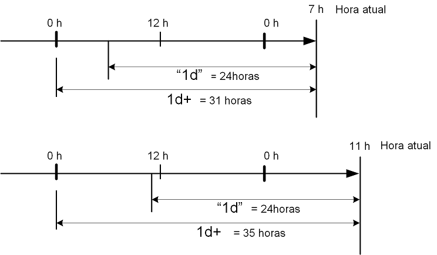
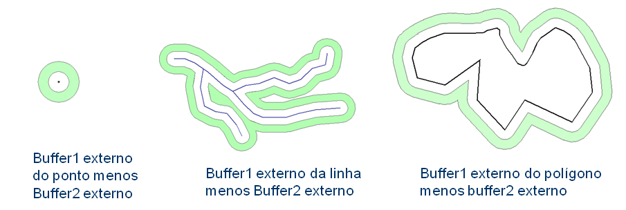

Operadores sobre Objetos Monitorados
Lista de Operadores sobre obj monitorado 
Os operadores espaciais disponíveis para serem utilizados com os objetos monitorados são baseados em operações zonais. Operadores zonais são funções que permitem obter de uma grade (ou dado matricial) um único valor que melhor represente todos os pontos da grade que caem sobre uma geometria (ponto, linha ou polígono) ou a uma distância fixa dessa geometria (buffer). A Figura 3.9 ilustra exemplos de operações zonais de um polígono de um objeto monitorado sobre os dados de ocorrência, PCD e matriz.

Figura 3.9 – Exemplo dos operadores zonais com dados de ocorrência, PCD e matriz.
Nos operadores há parâmetros que são obrigatórios e outros opcionais. Aqueles que são opcionais são identificados por colchetes [ ] quando são escolhidos pelos botões de atalho no final da janela de edição do programa de análise. Tais parâmetros estão sempre no final da lista de cada operador e se não forem utilizados serão considerados os valores padrões de cada um. No exemplo abaixo os parâmetros [<band>] e [<buffer>] são opcionais e neste caso se não declarar o [<buffer>] será considerada a própria geometria do objeto a ser monitorado e no caso do [<band>] será considerada a banda 0 (zero) de um dado dinâmico matricial.
grid.zonal.min("<dynamic_data_grid>", [<band>], [<buffer>])
Nas três linhas do operador “grid.zonal.min” abaixo o resultado é o mesmo, pois o [<band>] e [<buffer>] são utilizados como valores padrão ou não são declarados.
Exemplo: b1 = Buffer()
x1 = grid.zonal.min(“Chuva”, 0, b1)
ou
x1 = grid.zonal.min(“Chuva”, 0)
ou
x1 = grid.zonal.min(“Chuva”)
No exemplo, se o [<buffer>] for definido diferente do padrão, o [<band>] deve ser obrigatoriamente definido mesmo que se faça uso do padrão. Veja no exemplo a seguir que o [<band>] deve ser declarado.
Exemplo: b1 = Buffer(BufferType.Out_union, 50, "cm")
x1 = grid.zonal.min(“Chuva”, 0, b1)
Lista de Operadores sobre obj monitorado
Utilitários para operadores sobre objetos monitorados 
Antes de apresentar os operadores espaciais propriamente dito, veremos um conjunto de utilitários que podem ser utilizados junto com os operadores.
Os operadores que utilizam unidades de distância devem usar as letras entre aspas duplas (“<unidade>”). As seguintes opções estão disponíveis:
- “cm”: centímetros
- “m” : metros
- “km”: quilômetros
Exemplo de uso no operador “buffer”:
buffer1 = Buffer(BufferType.Out_union, 50, "cm")
buffer2 = Buffer(BufferType.Level, 400, "m", 200, "m")
buffer3 = Buffer(BufferType.In_out, 200, "km", 200, "km")
Os operadores que utilizam unidades de tempo devem usar a unidade imediatamente após o valor numérico, ambos entre aspas dupla ( “<num><unidade>” ). As seguintes opções estão disponíveis:
- s: Second – tempo em segundos a partir da data/hora atual.
- min: Minute – tempo em minutos a partir da data/hora atual.
- h: Hour – tempo em horas a partir da data/hora atual.
- d: Day – tempo em dias a partir da data/hora atual.
- d+: Day (Extended) – tempo em dias a partir da data/hora atual até a zero horas do número de dias informado.
- w: Week – tempo em semanas a partir da data/hora atual.
- w+: Week (Extended) – tempo em semanas a partir da hora atual até a zero horas do número de semanas informado.
A Figura 3.10 mostra a diferença ao utilizar o utilitário de unidade de tempo “d” e “d+” em dois horários diferentes, as 7 e as 11 horas da manhã. Supondo que estes utilitários fossem aplicados dois operadores históricos que olham para o passado a partir das 7 horas da manhã, note que a quantidade de horas retornada por cada utilitário é diferente. No utilitário “1d” sempre retorna 24 horas de tempo passado. Já o utilitário “1d+” retorna um tempo maior de 31 horas de tempo passado, pois considera o intervalo de tempo da 0 hora do dia anterior até a hora atual.

Figura 3.10 – Exemplo do uso de diferentes unidades de tempo “d” e “d+”.
Na mesma Figura 3.10 supondo que estes utilitários fossem utilizados em dois operadores históricos a partir das 11 horas da manhã, o intervalo de horas é diferente para ambos utilitários. O utilitário “1d” retorna o mesmo intervalo de 24 horas de tempo passado da situação anterior (referência das 7 horas da manhã). Já o utilitário “1d+” retorna um intervalo de tempo maior de 35 horas de tempo passado, comparado a situação anterior (referência das 7 horas da manhã).
Estes utilitários de tempo podem ser utilizados para operadores históricos (análise do tempo no passado) ou para operadores de previsão (análise do tempo no futuro) a partir da data/hora atual.
Exemplo de uso em alguns operadores que fazem uso da unidade de tempo:
x1 = occurrence.zonal.count("ocorrencias", "120s", buf1, "UF = 'AM'")
x2 = occurrence.zonal.interval.max("focos", "30min", "10min", "Intensidade", buf1)
x3 = dcp.zonal.history.min("Serra do Mar", "Pluvio", "48h", ids)
x4 = grid.zonal.forecast.median("ETA15km", "3d+", buffer_mun)
x5 = grid.zonal.history.accum.min("hidro", "1w", 0, buffer_reg)
x5 = grid.zonal.history.mean("hidro", "5w+")
Todas as análises que trabalham com objetos monitorados, isto é, um mapa vetorial com geometrias de pontos, linhas ou polígonos, pode-se optar por utilizar o utilitário “buffer” para definir áreas com equidistâncias dessas geometrias. A área definida pelo “buffer” será sobreposta aos dados dinâmicos, fazendo uso dos operadores zonais. Os tipos de “buffer” disponíveis são:
 Buffer( ) : Sem buffer. será considerado a própria geometria do ponto, linha e área do polígono (Figura 3.11).
Buffer( ) : Sem buffer. será considerado a própria geometria do ponto, linha e área do polígono (Figura 3.11).

Figura 3.11 – Sem “buffer” no ponto, linha e área do polígono
Exemplo sem buffer:
b1 = Buffer( ) ou
b1 = Buffer(BufferType.None)
NOTA: Operadores onde o “buffer” não é um parâmetro obrigatório e sendo este o último parâmetro no operador, basta omitir tal parâmetro para não utilizar “buffer”. No exemplo abaixo, as variáveis x1, x2 e x3 produzirão o mesmo resultado com o operador “grid.zonal.mean”, pois ambos não utilizam “buffer”. Na variável x3 ainda é possível omitir o valor 0 considerado padrão para a primeira banda/camada de um dado matricial.
b1 = Buffer( )
x1 = grid.zonal.mean(“Chuva”, 0, b1)
ou
x2 = grid.zonal.mean(“Chuva”, 0)
ou ainda
x3 = grid.zonal.mean(“Chuva”)
 BufferType.Out : Somente a área do buffer externo. Será considerada somente área do “buffer” externa à geometria do ponto, linha e limite do polígono (Figura 3.12).
BufferType.Out : Somente a área do buffer externo. Será considerada somente área do “buffer” externa à geometria do ponto, linha e limite do polígono (Figura 3.12).

Figura 3.12 – “Buffer” externo ao ponto, linha e limite do polígono
Exemplo do buffer externo:
b1 = Buffer(BufferType.Out, 200, “m")
 BufferType.In : Somente a área do buffer interno. Será considerada somente área do “buffer” interno à geometria do polígono (Figura 3.13). Para geometrias de ponto e linha considera-se ausência de “buffer”.
BufferType.In : Somente a área do buffer interno. Será considerada somente área do “buffer” interno à geometria do polígono (Figura 3.13). Para geometrias de ponto e linha considera-se ausência de “buffer”.

Figura 3.13 – “Buffer” interno ao ponto, linha e limite do polígono
Exemplo do buffer interno:
b1 = Buffer(BufferType.In, 200, “m")
 Buffer.Type.In_out : Área total do “buffer” interno e externo. Será considerada a união das áreas interna e externa do “buffer” para a geometria de ponto, linha e limite do polígono (Figura 3.14). Para geometrias de ponto e linha considera-se apenas o “buffer” externo.
Buffer.Type.In_out : Área total do “buffer” interno e externo. Será considerada a união das áreas interna e externa do “buffer” para a geometria de ponto, linha e limite do polígono (Figura 3.14). Para geometrias de ponto e linha considera-se apenas o “buffer” externo.

Figura 3.14 – “Buffer” interno e externo ao ponto, linha e limite do polígono
Exemplo do buffer interno externo:
b1 = Buffer(BufferType.In_out, 200, "m", 200, "m")
 Buffer.Type.Out_union : Área do “buffer” externo mais área da geometria. Será considerada a união da área do “buffer” externo mais toda área da geometria quando polígono (Figura 3.15). Para geometrias de ponto e linha considera-se apenas o “buffer” externo.
Buffer.Type.Out_union : Área do “buffer” externo mais área da geometria. Será considerada a união da área do “buffer” externo mais toda área da geometria quando polígono (Figura 3.15). Para geometrias de ponto e linha considera-se apenas o “buffer” externo.

Figura 3.15 – “Buffer” externo somada a área da geometria de ponto, linha e limite do polígono
Exemplo do buffer interno externo:
b1 = Buffer(BufferType.Out_union, 200, "m")
 Buffer.Type.In_diff : Área da geometria menos a área do buffer interno. Será considerada a área da geometria menos a área do buffer interno quando polígono (Figura 3.16). Para geometrias de ponto e linha considera-se ausência de “buffer”.
Buffer.Type.In_diff : Área da geometria menos a área do buffer interno. Será considerada a área da geometria menos a área do buffer interno quando polígono (Figura 3.16). Para geometrias de ponto e linha considera-se ausência de “buffer”.

Figura 3.16 – Área da geometria menos “buffer” interno da geometria de ponto, linha e limite do polígono
Exemplo da diferença do buffer interno:
b1 = Buffer(BufferType.In_diff, 200, "m")
 Buffer.Type.Level : Área diferença entre dois buffer externos. Será considerada a diferença entre um buffer maior menos o menor, definindo uma área não adjacente a geometria utilizada (Figura 3.17).
Buffer.Type.Level : Área diferença entre dois buffer externos. Será considerada a diferença entre um buffer maior menos o menor, definindo uma área não adjacente a geometria utilizada (Figura 3.17).

Figura 3.17 – Diferença entre dois “buffer” externos da geometria de ponto, linha e limite do polígono
Exemplo de níveis do buffer externo:
b1 = Buffer(BufferType.Level, 10, "km", 5, "km")
Lista de Operadores sobre obj monitorado
I.4- Utilitários “Get Value”
Utilitário para acesso aos atributos de um objeto monitorado. Válido para atributos numéricos ou alfa-numéricos.
Sintaxe:
get_value("<attribute_name>")
Exemplo: var1 = get_value(“vulnerabildade")
NOTA: Na interface de edição do modelo de análise há um atalho para os atributos do objeto monitorado  . Ao escolher o atributo, o utilitário “get_value” será inserido automaticamente.
. Ao escolher o atributo, o utilitário “get_value” será inserido automaticamente.
I.5- Utilitários “Add Value”
Utilitário para adicionar o valor de uma variável a um atributo na tabela resultante de uma análise baseada em objeto monitorado ou de PCD. Válido para atributos numéricos ou alfanuméricos. É obrigatório pelo menos uma vez o uso desse operador. Se nenhuma condição for atribuída ao utilitário, todos os objetos monitorados receberão um valor mesmo que este seja nulo. Para evitar o armazenamento de valores nulos ou que não tenham significado prático para um alerta, utilize o comando condicional (if) para restringir quais objetos receberão os resultados desse utilitário. A Figura 3.18 mostra como ficará a visualização de um mapa de municípios de São Paulo sem restrição, onde todos municípios são apresentados com uma cor, e com restrição, onde somente parte dos municípios serão apresentados.
Sintaxe:
add_value("<attribute_name>", <value>)
Exemplo: var1 = 10
add_value(“vulnerabildade", var1) # sem restrição
if var1 > 0:
add_value(“vulnerabildade", var1) # com restrição

Figura 3.18 – Exemplo da visualização de duas análises, sem (a) e com (b) restrição no uso do utilitário “add_value”.
I.6- Utilitários “ Get analysis date”
Utilitário que retorna a data/hora (datetime) de execução da análise, seja de uma análise em tempo real com valor de data/hora atual ou de um reprocessamento de dado histórico com data/hora no passado:
Sintaxe:
get_analysis_date()
Exemplo: var1 = get_analysis_date()
Nesse exemplo a variável var1 recebe o conteúdo de data/hora com “time zone” no formato “2018-06-15T23:11:11.876Z”. Para extrair parte do conteúdo de um “datetime” na forma numérica referente a data/hora de execução de uma análise, parâmetros como “year, month, day, hour, minute, second e microsecond” podem ser utilizados como nos exemplos a seguir.
Exemplos:
var2 = add_analysis_date().year : retorna o valor do ano entre 1 e ano atual.
var3 = add_analysis_date().month : retorna o valor do mês entre 1 e 12.
var4 = add_analysis_date().day : retorna o valor do dia entre 1 e 31 dependendo no mês e do ano.
var5 = add_analysis_date().hour : retorna o valor da hora entre 0 e 23.
var6 = add_analysis_date().minute : retorna o valor do minuto entre 0 e 59.
var7 = add_analysis_date().second : retorna o valor do segundo entre 0 e 59.
var8 = add_analysis_date().microsecond : retorna o valor da micro-segundo entre 1 e 1000000.
Para extrair parte do conteúdo de um “datetime” na forma numérica referente a data/hora do sistema operacional, independente do horário de execução da análise, utilize “datetime” do Python com os mesmos parâmetros como “year, month, day, hour, minute, second e microsecond”, como no exemplo a seguir, acrescido do parâmetro “today()” ou “now()”.
Exemplos:
var9 = datetime.date.today().year : retorna o valor do ano entre 1 e ano atual.
var10 = datetime.datetime.now().month : retorna o valor do mês entre 1 e 12.
Outra opção que pode ser utilizada á a função “strftime()” que retorna um “string” referente a data/hora do sistema operacional. Os exemplos a seguir mostram as opções de parâmetros para esta função.
Exemplos:
import time : necessário para usar a função “strftime()”.
var11 = time.strftime("%Y") : retorna o “string” do ano entre 0001 e ano atual.
var12 = time.strftime("%m") : retorna o “string” do mês entre 01 e 12.
var13 = time.strftime("%d") : retorna o “string” do dia entre 01 e 31 dependendo no mês e do ano.
var14 = time.strftime("%H") : retorna o “string” da hora entre 00 e 23.
var15 = time.strftime("%M") : retorna o “string” do minuto entre 00 e 59.
var16 = time.strftime("%S") : retorna o “string” do segundo entre 00 e 59.
I.7- Funções estatísticas para agregação
Para agregação de valores será útil fazer uso das funções de estatística, tais como:
- Statistic.min: valor mínimo de uma lista de valores
- Statistic.max: valor máximo de uma lista de valores
- Statistic.mean: valor médio de uma lista de valores
- Statistic.sum: soma de uma lista de valores
- Statistic.mean: média de uma lista de valores
- Statistic.standard_deviation: desvio padrão de uma lista de valores
Lista de Operadores sobre obj monitorado

Operadores zonais de ocorrências são operadores utilizados para obter estatísticas sobre as fontes de dados do tipo de ocorrências. Consideram a localização dos pontos de ocorrências e seus atributos que interceptam as geometrias (pontos, linhas ou polígonos) dos objetos a serem monitorados ou a área de influência (buffer) dessas geometrias num intervalo de tempo passado.
A Figura 3.19 mostra os pontos de ocorrência em relação a um objeto monitorado na forma de polígono. Ocorrências podem estar dentro do polígono, na área do “buffer” (depende do tipo de utilitário “buffer” utilizado) ou não fazem interseção espacial com o polígono nem o seu “buffer”. Veremos um grupo de operadores onde um segundo “buffer” poderá ser utilizado sobre cada ocorrência para verificar se há pontos de ocorrências sobrepostos e assim considerar como uma única.

Figura 3.19 – Diferença entre dois “buffer” externos da geometria de ponto, linha e limite do polígono
Estes operadores são divididos em três grupos: Zonal, Zonal por intervalos e Zonal por agregação. A descrição de cada tipo a seguir.
Grupo de operadores que consideram as ocorrências que interceptam o objeto monitorado ou sua área de influência (buffer) no intervalo de tempo definido entre a data/hora atual e o valor de tempo informado no passado.
SINTAXE GERAL:
occurrence.zonal.<operator>("<dynamic_data_occurrence>", "<attribute>", "<time>", [<buffer>], ["<restriction>"])
onde:
- operator: count, min, max, mean, sum, median, standard_deviation, variance
- dynamic_data_occurrence: String com o nome da série de dados de ocorrências;
- attribute: String com o nome do atributo da ocorrência que deve ser utilizado para recuperar algum valor associado a ocorrência. O atributo deve ser do tipo numérico (Ex. Integer, Float, Double, Long). Não usar para operador “count”;
- time: String com o intervalo de tempo, a partir da hora atual, para filtrar as ocorrências. Este intervalo será aberto (< x) no valor informado e fechado ( = ) na hora atual. Ver utilitário unidades de tempo;
- buffer: [Opcional] “Buffer” para ser aplicado ao objeto monitorado. Parâmetro obrigatório somente se o parâmetro seguinte (restriction) for utilizado. Se não declarado será considerada a própria geometria do objeto (no caso do um mapa de polígonos, a própria área do polígono é utilizada). Ver utilitário “buffer” acima;
- restriction: [Opcional] String com a restrição SQL a ser aplicada sobre atributos do dado dinâmico de ocorrência. Não utilizar se não houver restrição. Se for utilizada a restrição, obrigatoriamente o parâmetro de buffer acima deve ser declarado, mesmo que o buffer seja nulo.
Segue a descrição de cada operador.
Zonal: Contagem
Retorna a quantidade de ocorrências que interceptam o objeto monitorado ou sua área de influência (buffer) no intervalo de tempo definido entre a data/hora atual e o valor de tempo informado no passado.
Sintaxe:
occurrence.zonal.count("<dynamic_data_occurrence>", "<time>", [<buffer>], ["<restriction>"])
Exemplo: # exemplo com buffer e com restrição
buf1 = Buffer(BufferType.Level, 400, "m", 200, "m")
x = occurrence.zonal.count("ocorrencias", "1d", buf1, "UF = ‘AM’")
# exemplo sem buffer e sem restrição
x = occurrence.zonal.count("ocorrencias", "1d+")
# exemplo sem buffer e com restrição
buf1 = Buffer()
x = occurrence.zonal.count("ocorrencias", "1d", buf1, "UF = ‘AM’")
# ou
x = occurrence.zonal.count("ocorrencias", "1d", Buffer(), "UF = ‘AM’")
Zonal: Mínimo
Retorna o menor valor do atributo das ocorrências que interceptam o objeto monitorado ou sua área de influência (buffer) no intervalo de tempo definido entre a data/hora atual e o valor de tempo informado no passado.
Sintaxe:
occurrence.zonal.min("<dynamic_data_occurrence>", "<attribute>", "<time>", [<buffer>], ["<restriction>"])
Exemplo: buf1 = Buffer()
x = occurrence.zonal.min("foco", "intensidade","1d", buf1, "UF = ‘AM’")
Zonal: Máximo
Retorna o maior valor do atributo das ocorrências que interceptam o objeto monitorado ou sua área de influência (buffer) no intervalo de tempo definido entre a data/hora atual e o valor de tempo informado no passado.
Sintaxe:
occurrence.zonal.max("<dynamic_data_occurrence>", "<attribute>", "<time>", [<buffer>], ["<restriction>"])
Exemplo: buf1 = Buffer()
x = occurrence.zonal.max("ocorrencias", "Intensidade", "1d", buf1, "UF = ‘AM’")
Zonal: Média
Retorna a média dos valores do atributo das ocorrências que interceptam o objeto monitorado ou sua área de influência (buffer) no intervalo de tempo definido entre a data/hora atual e o valor de tempo informado no passado.
Sintaxe:
occurrence.zonal.mean("<dynamic_data_occurrence>", "<attribute>", "<time>", [<buffer>], ["<restriction>"])
Exemplo: buf1 = Buffer()
x = occurrence.zonal.mean("ocorrencias", "intensidade", "1d", buf1, "UF = ‘AM’")
Zonal: Mediana
Retorna a mediana dos valores do atributo das ocorrências que interceptam o objeto monitorado ou sua área de influência (buffer) no intervalo de tempo definido entre a data/hora atual e o valor de tempo informado no passado.
Sintaxe:
occurrence.zonal.median("<dynamic_data_occurrence>", "<attribute>", "<time>", [<buffer>], ["<restriction>"])
Exemplo: buf1 = Buffer()
x = occurrence.zonal.median("ocorrencias", "intensidade", "1d", buf1, "UF = 'AM'")
Zonal: Soma
Retorna a soma dos valores do atributo das ocorrências que interceptam o objeto monitorado ou sua área de influência (buffer) no intervalo de tempo definido entre a data/hora atual e o valor de tempo informado no passado..
Sintaxe:
occurrence.zonal.sum("<dynamic_data_occurrence>", "<attribute>", "<time>", [<buffer>], ["<restriction>"])
Exemplo: buf1 = Buffer()
x = occurrence.zonal.sum("ocorrencias", "intensidade", "1d", buf1, "UF = 'AM'")
Zonal: Desvio Padrão
Retorna o desvio padrão dos valores do atributo das ocorrências que interceptam o objeto monitorado ou sua área de influência (buffer) no intervalo de tempo definido entre a data/hora atual e o valor de tempo informado no passado.
Sintaxe:
occurrence.zonal.standard_deviation("<dynamic_data_occurrence>", "<attribute>", "<time>", [<buffer>], ["<restriction>"])
Exemplo: buf1 = Buffer(BufferType.Level, 400, “m“, 200, “m”)
x = occurrence.zonal.standard_deviation("ocorrencias", "intensidade", "1d", buf1)
Zonal: Variância
Retorna a variância dos valores do atributo das ocorrências que interceptam o objeto monitorado ou sua área de influência (buffer) no intervalo de tempo definido entre a data/hora atual e o valor de tempo informado no passado.
Sintaxe:
occurrence.zonal.variance("<dynamic_data_occurrence>", "<attribute>", "<time>", [<buffer>], ["<restriction>"])
Exemplo: x = occurrence.zonal.variance("ocorrencias", "1d", "Intensidade")
II.2- Zonal por intervalos
Grupo de operadores que consideram as ocorrências que interceptam o objeto monitorado ou sua área de influência (buffer) no intervalo de tempo definido entre dois valores de tempo informado no passado.
SINTAXE GERAL:
occurrence.zonal.interval.<operator>("<dynamic_data_occurrence>", "<attribute>", "<time_begin>", "<time_end>", [<buffer>], ["<restriction>"])
onde:
- operator : count, min, max, mean, median, sum, standard_deviation, variance
- dynamic_data_occurrence : String com o nome da série de dados de ocorrências;
- attribute: String com o nome do atributo da ocorrência que deve ser utilizado para recuperar os valores, o atributo deve ser do tipo numérico (Ex. Integer, Float, Double, Long). Não usar para operador “count”;
- time_begin: String inicial (mais antigo) do intervalo de tempo para filtrar as ocorrências. Este valor será aberto (< tempo mais antigo) no tempo informado;
- time_end: String final (mais recente) do intervalo de tempo para filtrar as ocorrências. Este valor será fechado ( <= tempo mais recente) no tempo informado;
- buffer: [Opcional] “Buffer” para ser aplicado ao objeto monitorado. Parâmetro obrigatório somente se o parâmetro seguinte (restriction) for utilizado. Se não declarado será considerada a própria geometria do objeto (no caso do um mapa de polígonos, a própria área do polígono é utilizada). Ver utilitário “buffer” acima;
- restriction: [Opcional] String com a restrição SQL a ser aplicada sobre atributos do dado dinâmico de ocorrência. Não utilizar se não houver restrição. Se for utilizada a restrição, obrigatoriamente o parâmetro de buffer acima deve ser declarado, mesmo que o buffer seja nulo.
Segue a descrição de cada operador.
Zonal por intervalo: Contagem
Retorna a quantidade de ocorrências que interceptam o objeto monitorado ou sua área de influência (buffer) no intervalo de tempo inicial e final informado no passado em função da data/hora atual.
Sintaxe:
occurrence.zonal.interval.count("<dynamic_data_occurrence>", "<time_begin>", "<time_end>", [<buffer>], ["<restriction>"])
Exemplo: # exemplo com buffer e com restrição
buf1 = Buffer(BufferType.Level, 400, "m", 200, "m")
x = occurrence.zonal.interval.count("ocorrencias", "2d", "1d", buf1, "UF = 'AM'")
# exemplo sem buffer e sem restrição
x = occurrence.zonal.interval.count("ocorrencias", "2d", "1d")
# exemplo sem buffer e com restrição
buf1 = Buffer()
x = occurrence.zonal.interval.count("ocorrencias", "2d", "1d", buf1, "UF = 'AM'")
# ou
x = occurrence.zonal.interval.count("ocorrencias", "2d", "1d", Buffer(), "UF = 'AM'")
Zonal por intervalo: Mínimo
Retorna o menor valor do atributo das ocorrências que interceptam o objeto monitorado ou sua área de influência (buffer) no intervalo de tempo definido entre a data/hora atual e o valor de tempo informado no passado.
Sintaxe:
occurrence.zonal.interval.min("<dynamic_data_occurrence>", "<attribute>", "<time_begin>", "<time_end>", [<buffer>], ["<restriction>"])
Exemplo: buf1 = Buffer()
x = occurrence.zonal.interval.min("raios", "Intensidade", "4h", "1h", buf1, "UF = 'AM'")
Zonal por intervalo: Máximo
Retorna o maior valor do atributo das ocorrências que interceptam o objeto monitorado ou sua área de influência (buffer) no intervalo de tempo definido entre a data/hora atual e o valor de tempo informado no passado.
Sintaxe:
occurrence.zonal.interval.max("<dynamic_data_occurrence>", "<attribute>", "<time_begin>", "<time_end>", [<buffer>], ["<restriction>"])
Exemplo: buf1 = Buffer()
x = occurrence.zonal.interval.max("raios", "Intensidade", "4h", "1h", buf1, "UF = 'AM'")
Zonal por intervalo: Média
Retorna a média dos valores do atributo das ocorrências que interceptam o objeto monitorado ou sua área de influência (buffer) no intervalo de tempo definido entre a data/hora atual e o valor de tempo informado no passado.
Sintaxe:
occurrence.zonal.interval.mean("<dynamic_data_occurrence>", "<attribute>", "<time_begin>", "<time_end>", [<buffer>], ["<restriction>"])
Exemplo: buf1 = Buffer()
x = occurrence.zonal.interval.mean("raios", "Intensidade", "4h", "1h", buf1, "UF = 'AM'")
Zonal por intervalo: Mediana
Retorna a mediana dos valores do atributo das ocorrências que interceptam o objeto monitorado ou sua área de influência (buffer) no intervalo de tempo definido entre a data/hora atual e o valor de tempo informado no passado.
Sintaxe:
occurrence.zonal.interval.median("<dynamic_data_occurrence>", "<attribute>", "<time_begin>", "<time_end>", [<buffer>], ["<restriction>"])
Exemplo: buf1 = Buffer()
x = occurrence.zonal.interval.median("raios", "Intensidade", "4h", "1h", buf1, "UF = 'AM'")
Zonal por intervalo: Soma
Retorna a soma dos valores do atributo das ocorrências que interceptam o objeto monitorado ou sua área de influência (buffer) no intervalo de tempo definido entre a data/hora atual e o valor de tempo informado no passado.
Sintaxe:
occurrence.zonal.interval.sum(“<dynamic_data_occurrence>”,“<time_begin>”, “<time_end>”, “<attribute>”, [<buffer>], “<restriction>”)
Exemplo: buf1 = Buffer()
x = occurrence.zonal.interval.sum("raios", "Intensidade", "4h", "1h", buf1, "UF = 'AM'")
Zonal por intervalo: Desvio Padrão
Retorna o desvio padrão dos valores do atributo das ocorrências que interceptam o objeto monitorado ou sua área de influência (buffer) no intervalo de tempo definido entre a data/hora atual e o valor de tempo informado no passado.
Sintaxe:
occurrence.zonal.interval.standard_deviation("<dynamic_data_occurrence>", "<attribute>", "<time_begin>", "<time_end>", [<buffer>], ["<restriction>"])
Exemplo: buf1 = Buffer(BufferType.Level, 400, "m", 200, "m")
x = occurrence.zonal.interval.standard_deviation("raios", "Intensidade", "4h", "1h", buf1)
Zonal por intervalo: Variância
Retorna a variância dos valores do atributo das ocorrências que interceptam o objeto monitorado ou sua área de influência (buffer) no intervalo de tempo definido entre a data/hora atual e o valor de tempo informado no passado.
Sintaxe:
occurrence.zonal.interval.variance("<dynamic_data_occurrence>", "<attribute>", "<time_begin>", "<time_end>", [<buffer>], ["<restriction>"])
Exemplo: x = occurrence.zonal.interval.variance("raios", "Intensidade", "360s", "48s")
II.3- Zonal por agregação
Grupo de operadores que consideram as ocorrências agrupadas em torno do mesmo ponto e que interceptam o objeto monitorado ou sua área de influência (buffer) no intervalo de tempo definido entre a data/hora atual e o valor de tempo informado no passado. Para verificar as ocorrências agrupadas um outro “buffer” nas ocorrências é definido.
SINTAXE GERAL:
occurrence.zonal.aggregation.<operator>("<dynamic_data_occurrence>", "<attribute>", "<time>",aggregationStatistic, aggregationBuffer, [<buffer>], ["<restriction>"])
onde:
- operator: count, min, max, mean, sum, median, standard_deviation, variance
- dynamic_data_occurrence : String com o nome da série de dados de ocorrências;
- attribute: String com o nome do atributo da ocorrência que deve ser utilizado para recuperar os valores, o atributo deve ser do tipo numérico (Ex. Integer, Float, Double, Long). Não usar para operador “count”;
- time: String com o intervalo de tempo, a partir da hora atual, para filtrar as ocorrências. Ver utilitário Unidades de tempo;
- aggregationStatistic: Tipo de operador estatístico a ser utilizado para selecionar o valor do atributo para as ocorrências agregadas. Não usar para operador “count”;
- aggregationBuffer: Buffer para agregação dos pontos de ocorrência. Ver utilitário Buffer;
- buffer: [Opcional] “Buffer” para ser aplicado ao objeto monitorado. Parâmetro obrigatório somente se o parâmetro seguinte (restriction) for utilizado. Se não declarado será considerada a própria geometria do objeto (no caso do um mapa de polígonos, a própria área do polígono é utilizada). Ver utilitário “buffer” acima;
- restriction: [Opcional] String com a restrição SQL a ser aplicada sobre atributos do dado dinâmico de ocorrência. Não utilizar se não houver restrição. Se for utilizada a restrição, obrigatoriamente o parâmetro de buffer acima deve ser declarado, mesmo que o buffer seja nulo.
Segue a descrição de cada operador.
Zonal por agregação: Contagem
Retorna a quantidade de ocorrências que interceptam o objeto monitorado ou sua área de influência (buffer) no intervalo de tempo definido entre a data/hora atual e o valor de tempo informado no passado. Ocorrências agrupadas em torno do mesmo ponto serão contadas uma única vez.
Sintaxe:
occurrence.zonal.aggregation.count("<dynamic_data_occurrence>", "<time>", aggregationBuffer, [<buffer>], ["<restriction>"])
Exemplo: # exemplo com buffer na ocorrência e no objeto, e com restrição
buf1 = Buffer(BufferType.Level, 400, "m", 200, "m")
bufaggreg = Buffer(BufferType.Out, 200, "m")
x = occurrence.zonal.aggregation.count("foco", "1d", bufaggreg, buf1, "UF = 'AM'")
# exemplo sem buffer no objeto, mas com buffer na ocorrência, e sem restrição
bufaggreg = Buffer(BufferType.Out, 200, "m")
x = occurrence.zonal.aggregation.count("foco", "1d", bufaggreg)
# exemplo sem buffer e com restrição
buf1 = Buffer()
x = occurrence.zonal.aggregation.count("foco", "1d", bufaggreg, buf1, "UF = 'AM'")
# ou
x = occurrence.zonal.aggregation.count("foco", "1d", bufaggreg, Buffer(), "UF = 'AM'")
Zonal por agregação: Mínimo
Retorna o menor valor do atributo das ocorrências que interceptam o objeto monitorado ou sua área de influência (buffer) no intervalo de tempo definido entre a data/hora atual e o valor de tempo informado no passado. Ocorrências agrupadas em torno do mesmo ponto terão um único valor obtido por análise estatística (utilitário estatístico).
Sintaxe:
occurrence.zonal.aggregation.min("<dynamic_data_occurrence>", "<attribute>", "<time>",aggregationStatistic, aggregationBuffer, [<buffer>], ["<restriction>"])
Exemplo: bufaggreg = Buffer(BufferType.Out, 200, "m")
x = occurrence.zonal.aggregation.min("raios", "Intensidade", "4h", Statistic.min, bufaggreg)
Zonal por agregação: Máximo
Retorna o maior valor do atributo das ocorrências que interceptam o objeto monitorado ou sua área de influência (buffer) no intervalo de tempo definido entre a data/hora atual e o valor de tempo informado no passado. Ocorrências agrupadas em torno do mesmo ponto terão um único valor obtido por análise estatística (utilitário estatístico).
Sintaxe:
occurrence.zonal.aggregation.max("<dynamic_data_occurrence>", "<attribute>", "<time>",aggregationStatistic, aggregationBuffer, [<buffer>], ["<restriction>"])
Exemplo: bufaggreg = Buffer(BufferType.Out, 200, "m")
x = occurrence.zonal.aggregation.max("raios", "Intensidade", "4h", Statistic.max, bufaggreg)
Zonal por agregação: Média
Retorna a média dos valores do atributo das ocorrências que interceptam o objeto monitorado ou sua área de influência (buffer) no intervalo de tempo definido entre a data/hora atual e o valor de tempo informado no passado. Ocorrências agrupadas em torno do mesmo ponto terão um único valor obtido por análise estatística (utilitário estatístico).
Sintaxe:
occurrence.zonal.aggregation.mean("<dynamic_data_occurrence>", "<attribute>", "<time>",aggregationStatistic, aggregationBuffer, [<buffer>], ["<restriction>"])
Exemplo: buf1 = Buffer()
bufaggreg = Buffer(BufferType.Out, 200, "m")
x = occurrence.zonal.aggregation.mean("raios", "Intensidade", "1h", Statistic.max, bufaggreg, buf1, "UF = 'AM'")
Zonal por agregação: Mediana
Retorna a mediana dos valores do atributo das ocorrências que interceptam o objeto monitorado ou sua área de influência (buffer) no intervalo de tempo definido entre a data/hora atual e o valor de tempo informado no passado. Ocorrências agrupadas em torno do mesmo ponto terão um único valor obtido por análise estatística (utilitário estatístico).
Sintaxe:
occurrence.zonal.aggregation.median("<dynamic_data_occurrence>", "<attribute>", "<time>",aggregationStatistic, aggregationBuffer, [<buffer>], ["<restriction>"]))
Exemplo: bufaggreg = Buffer(BufferType.Out, 200, "m")
x = occurrence.zonal.aggregation.median("raios", "Intensidade", "1h", Statistic.max, bufaggreg)
Zonal por agregação: Soma
Retorna a soma dos valores do atributo das ocorrências que interceptam o objeto monitorado ou sua área de influência (buffer) no intervalo de tempo definido entre a data/hora atual e o valor de tempo informado no passado. Ocorrências agrupadas em torno do mesmo ponto terão um único valor obtido por análise estatística (utilitário estatístico).
Sintaxe:
occurrence.zonal.aggregation.sum("<dynamic_data_occurrence>", "<attribute>", "<time>",aggregationStatistic, aggregationBuffer, [<buffer>], ["<restriction>"])
Exemplo: buf1 = Buffer()
bufaggreg = Buffer(BufferType.Out, 200, "m")
x = occurrence.zonal.aggregation.sum("raios", "Intensidade", "1h", Statistic.max, bufaggreg, buf1, "UF = 'AM'")
Zonal por agregação: Desvio Padrão
Retorna o desvio padrão dos valores do atributo das ocorrências que interceptam o objeto monitorado ou sua área de influência (buffer) no intervalo de tempo definido entre a data/hora atual e o valor de tempo informado no passado. Ocorrências agrupadas em torno do mesmo ponto terão um único valor obtido por análise estatística (utilitário estatístico).
Sintaxe:
occurrence.zonal.aggregation.standard_deviation("<dynamic_data_occurrence>", "<attribute>", "<time>",aggregationStatistic, aggregationBuffer, [<buffer>], ["<restriction>"])
Exemplo: buf1 = Buffer(BufferType.Level, 400, "m", 200, "m")
bufaggreg = Buffer(BufferType.Out, 200, "m")
x = occurrence.zonal.aggregation.standard_deviation("raios", "Intensidade", "1h", Statistic.max, bufaggreg, buf1)
Zonal por agregação: Variância
Retorna a variância dos valores do atributo das ocorrências que interceptam o objeto monitorado ou sua área de influência (buffer) no intervalo de tempo definido entre a data/hora atual e o valor de tempo informado no passado. Ocorrências agrupadas em torno do mesmo ponto terão um único valor obtido por análise estatística (utilitário estatístico).
Sintaxe:
occurrence.zonal.aggregation.variance("<dynamic_data_occurrence>", "<attribute>", "<time>",aggregationStatistic, aggregationBuffer, [<buffer>], ["<restriction>"])
Exemplo: bufaggreg = Buffer(BufferType.Out, 200, "m")
x = occurrence.zonal.aggregation.variance("raios", "Intensidade", "360sec", Statistic.max, bufaggreg)
Lista de Operadores sobre obj monitorado

Operadores zonais de PCD (Plataforma de Coleta de Dados) são utilizados para obter estatísticas sobre as fontes de dados do tipo de PCD. Consideram a localização fixa dos pontos e obedecem uma regra de influência ou uma lista informando quais serão os pontos de PCD que serão considerados para cada objeto a ser monitorado ou a área do “buffer” desses. Cada PCD pode ter seu próprio conjunto de atributos associados.
A Figura 3.20 mostra a área de influência de alguns pontos de PCD em relação a área de um objeto monitorado e em relação ao buffer externo (apenas anel externo sem considerar a área de objeto) desse mesmo objeto.

Figura 3.20 – Diferenças de abordagens da relação entre a área de influência de PCD´s e um objeto monitorado ou um “buffer” externo deste objeto.
NOTA: Os operadores e utilitários desse item utilizam dos dados das PCD´s de forma discreta, pois as medidas realizadas são reais nos pontos de localização de cada PCD. Neste caso, um conjunto de regras de influência podem ser aplicadas a cada localização. Outra maneira de utilizar os dados de PCD, de forma contínua, é a partir de um dado matricial criado pela interpolação de uma variável escolhida (ver item 2.4.2). O dado dinâmico matricial resultante da interpolação pode ser utilizado igualmente como qualquer outro dado matricial. Veja a lista de operadores zonais de grades no item 3.3.3.4.
Antes de usar os operadores devemos conhecer os utilitários de PCD que permitem definir as regras de influência, descrito a seguir.
III.1- Regra de Influência
Há dois utilitários para definir quais PCD´s serão consideradas para cada objeto monitorado, um baseado em regras e outro nos atributos do próprio objeto. O utilitário baseado em regras depende do tipo escolhido pelo usuário, isto é, se toca a área do objeto ou seu “buffer”, se envolve o centro de massa da área do objeto ou seu “buffer” ou uma região específica para cada PCD. Para os tipos toca e centro, um valor de raio deverá ser informado na análise. A Figura 3.21 mostra os três tipos de regras de influência.
SINTAXE GERAL:
dcp.zonal.influence.by_attribute("<dynamic_data_dcp>", <list_attribute>)
dcp.zonal.influence.by_rule("<dynamic_data_dcp>", [<buffer>])
onde:
- dynamic_data_dcp : String com o nome da série de dados de PCD;
- list_attribute: Parâmetro contendo a lista de atributos do objeto monitorado contendo ID´s das PCD´s que o influenciam. Ex. [att1, att2, att3] ;
- buffer : [Opcional] “Buffer” para ser aplicado ao objeto monitorado. Ver utilitário “buffer” acima.

Figura 3.21 – Diferentes regras de influência das PCDs
A Figura 3.22 mostra um mapa contendo polígonos de algumas bacias hidrográficas e a tabela de atributos associada. Duas colunas dessa tabela especificam os códigos das PCDs que devem ser utilizados por cada bacia.

Figura 3.22 – Mapa e a tabela de atributos com código das PCDs a serem utilizados.
NOTA: Em ambos os utilitários o resultado será uma lista contendo as PCDs que serão utilizados por cada objeto monitorado.
A seguir são apresentados três tipos de operadores: Zonal, Zonal histórico e Zonal histórico por intervalo. A descrição de cada tipo a seguir.
III.2- Zonal
Grupo de operadores que consideram as PCD´s que influenciam o objeto monitorado e utilizam somente a última medida obtidas por cada PCD.
SINTAXE GERAL:
dcp.zonal.<operator>("<dynamic_data_dcp>", <buffer>, "<attribute>", <list_dcp>)
onde:
- operator: Count, Min, Max, Mean, Median, Sum, Standard_deviation, Variance;
- dynamic_data_dcp: String com o nome da série de dados de PCD;
- buffer: Buffer para ser aplicado ao objeto monitorado. Parâmetro obrigatório somente para operador “count”. Ver utilitário Buffer;
- attribute: String com o nome do atributo da PCD que deve ser utilizado para recuperar valores estatísticos. O atributo deve ser do tipo numérico (Ex. Integer, Float, Double, Long). Não usar para operador “count”;
- list_dcp: Lista contendo a identificação das PCD´s que influenciam o objeto monitorado. Ver utilitário “Regra de Influência”. Não usar se operador zonal for “count”.
Segue a descrição de cada operador.
Zonal: Contagem
Retorna o número de PCD´s que influenciam o objeto monitorado ou sua área de influência. Depende do valor de raio informado para definir a área ao redor de cada PCD para os tipos Centro ou Toca, ou áreas se tipo for Região.
Sintaxe:
dcp.zonal.count("<dynamic_data_dcp>", <buffer>)
Exemplo: buf1 = Buffer(BufferType.Out_union, 2, "km")
x = dcp.zonal.count("estacoes", buf1)
Zonal: Mínimo
Retorna o menor valor de um atributo comum das PCD´s que influenciam cada geometria de um objeto monitorado.
Sintaxe:
dcp.zonal.min("<dynamic_data_dcp>", "<attribute>", <list_dcp>)
Exemplo: b1 = Buffer(BufferType.Out_union, 2, "km")
ids = dcp.influence.by_rule("Serra do Mar", b1)
x = dcp.zonal.min("Serra do Mar", "Pluvio", ids)
Zonal: Máximo
Retorna o maior valor de um atributo comum das PCD´s que influenciam cada geometria de um objeto monitorado.
Sintaxe:
dcp.zonal.max("<dynamic_data_dcp>", "<attribute>", <list_dcp>)
Exemplo: b1 = Buffer(BufferType.Out, 400, "m")
ids = dcp.influence.by_rule("Serra do Mar", b1)
x = dcp.zonal.max("Serra do Mar", "Pluvio", ids)
Zonal: Média
Retorna a média dos valores de um atributo comum das PCD´s que influenciam cada geometria de um objeto monitorado.
Sintaxe:
dcp.zonal.mean("<dynamic_data_dcp>", "<attribute>", <list_dcp>)
Exemplo: b1 = Buffer(BufferType.Level, 10, "km", 5, "km")
ids = dcp.influence.by_rule("Serra do Mar", b1)
x = dcp.zonal.mean("Serra do Mar", "Chuva", ids)
Zonal: Mediana
Retorna a mediana dos valores de um atributo comum das PCD´s que influenciam cada geometria de um objeto monitorado.
Sintaxe:
dcp.zonal.median("<dynamic_data_dcp>", "<attribute>", <list_dcp>)
Exemplo: b1 = Buffer(BufferType.Out, 800, "m")
ids = dcp.influence.by_rule("Serra do Mar", b1)
x = dcp.zonal.median("Serra do Mar", "temperatura", ids)
Zonal: Soma
Retorna a soma dos valores de um atributo comum das PCD´s que influenciam cada geometria de um objeto monitorado.
Sintaxe:
dcp.zonal.sum("<dynamic_data_dcp>", "<attribute>", <list_dcp>)
Exemplo: ids = dcp.influence.by_attribute("Serra do Mar", [att1, att2, att2, att4])
x = dcp.zonal.sum("Serra do Mar", "temperatura", ids)
Zonal: Desvio Padrão
Retorna o desvio padrão dos valores de um atributo comum das PCD´s que influenciam cada geometria de um objeto monitorado.
Sintaxe:
dcp.zonal.standard_deviation("<dynamic_data_dcp>", "<attribute>", <list_dcp>)
Exemplo: b1 = Buffer(BufferType.Out, 800, "m")
ids = dcp.influence.by_rule("Serra do Mar", b1)
x = dcp.zonal.standard_deviation("Serra do Mar", "temperatura", ids)
Zonal: Variância
Retorna a variância dos valores de um atributo comum das PCD´s que influenciam cada geometria de um objeto monitorado.
Sintaxe:
dcp.zonal.variance("<dynamic_data_dcp>", "<attribute>", <list_dcp>)
Exemplo: b1 = Buffer(BufferType.In, 800, "m")
ids = dcp.influence.by_rule("Serra do Mar", b1)
x = dcp.zonal.variance("Serra do Mar", "temperatura", ids)
III.3- Zonal histórico
Grupo de operadores que consideram as PCD´s que influenciam o objeto monitorado e utilizam as últimas medidas obtidas por cada PCD, no intervalo de tempo definido entre a data/hora atual e o valor de tempo informado no passado.
SINTAXE GERAL:
dcp.zonal.history.<operator>("<dynamic_data_dcp>", "<attribute>", "<time>", <list_dcp>)
onde:
- operator : Min, Max, Mean, Sum, Median, Standard_deviation, Variance;
- dynamic_data_dcp : String com o nome da série de dados de PCD;
- attribute : String com o nome do atributo da PCD que deve ser utilizado para recuperar valores estatísticos. O atributo deve ser do tipo numérico (Ex. Integer, Float, Double, Long). Não usar para operador “count”;
- time : String com o intervalo de tempo, a partir da hora atual, para filtrar os valores das PCD´s. Este intervalo será aberto (< x) no valor informado e fechado ( = ) na hora atual. Ver utilitário unidades de tempo;
- list_dcp : lista contendo a identificação das PCD´s que influenciam o objeto monitorado. Ver utilitário “Regra de Influência”. Não usar se operador zonal for “count”.
Segue a descrição de cada operador.
Zonal histórico: Mínimo
Retorna o menor valor de um atributo comum das PCD´s que influenciam cada geometria de um objeto monitorado, no intervalo de tempo definido entre a data/hora atual e o valor de tempo informado no passado.
Sintaxe:
dcp.zonal.history.min("<dynamic_data_dcp>", "<attribute>", "<time>", <list_dcp>)
Exemplo: b1 = Buffer(BufferType.Out_union, 2, "km")
ids = dcp.influence.by_rule("Serra do Mar", b1)
x = dcp.zonal.history.min("Serra do Mar", "Pluvio“, “1d”, ids)
Zonal histórico: Máximo
Retorna o maior valor de um atributo comum das PCD´s que influenciam cada geometria de um objeto monitorado, no intervalo de tempo definido entre a data/hora atual e o valor de tempo informado no passado.
Sintaxe:
dcp.zonal.history.max("<dynamic_data_dcp>", "<attribute>", "<time>", <list_dcp>)
Exemplo: b1 = Buffer(BufferType.Out, 400, "m")
ids = dcp.influence.by_rule("Serra do Mar", b1)
x = dcp.zonal.history.max("Serra do Mar", "Pluvio", "30h", ids)
Zonal histórico: Média
Retorna a média dos valores de um atributo comum das PCD´s que influenciam cada geometria de um objeto monitorado, no intervalo de tempo definido entre a data/hora atual e o valor de tempo informado no passado.
Sintaxe:
dcp.zonal.history.mean("<dynamic_data_dcp>", "<attribute>", "<time>", <list_dcp>)
Exemplo: b1 = Buffer(BufferType.Level, 10, "km", 5, "km")
ids = dcp.influence.by_rule("Serra do Mar", b1)
x = dcp.zonal.history.mean("Serra do Mar", "Chuva", "3d", ids)
Zonal histórico: Mediana
Retorna a mediana dos valores de um atributo comum das PCD´s que influenciam cada geometria de um objeto monitorado, no intervalo de tempo definido entre a data/hora atual e o valor de tempo informado no passado.
Sintaxe:
dcp.zonal.history.median("<dynamic_data_dcp>", "<attribute>", "<time>", <list_dcp>)
Exemplo: b1 = Buffer(BufferType.Out, 800, "m")
ids = dcp.influence.by_rule("Serra do Mar", b1)
x = dcp.zonal.history.median("Serra do Mar", "temperatura", "360min", ids)
Zonal histórico: Soma
Retorna a soma dos valores de um atributo comum das PCD´s que influenciam cada geometria de um objeto monitorado, no intervalo de tempo definido entre a data/hora atual e o valor de tempo informado no passado.
Sintaxe:
dcp.zonal.history.sum("<dynamic_data_dcp>", "<attribute>", "<time>", <list_dcp>)
Exemplo: ids = dcp.influence.by_attribute("Serra do Mar", [att1, att2, att2, att4])
x = dcp.zonal.history.sum("Serra do Mar", "temperatura", "5h", ids)
Zonal histórico: Desvio Padrão
Retorna o desvio padrão dos valores de um atributo comum das PCD´s que influenciam cada geometria de um objeto monitorado, no intervalo de tempo definido entre a data/hora atual e o valor de tempo informado no passado.
Sintaxe:
dcp.zonal.history.standard_deviation("<dynamic_data_dcp>", "<attribute>", "<time>", <list_dcp>)
Exemplo: b1 = Buffer(BufferType.Out, 800, "m")
ids = dcp.influence.by_rule("Serra do Mar", b1)
x = dcp.zonal.history.standard_deviation("Serra do Mar", "temperatura", "1w", ids)
Zonal histórico: Variância
Retorna a variância dos valores de um atributo comum das PCD´s que influenciam cada geometria de um objeto monitorado, no intervalo de tempo definido entre a data/hora atual e o valor de tempo informado no passado.
Sintaxe:
dcp.zonal.history.variance("<dynamic_data_dcp>", "<attribute>", "<time>", <list_dcp>)
Exemplo: b1 = Buffer(BufferType.In, 800, "m")
ids = dcp.influence.by_rule("Serra do Mar", b1)
x = dcp.zonal.history.variance("Serra do Mar", "temperatura", "24h", ids)
III.4- Zonal histórico por intervalo
Grupo de operadores que consideram as PCD´s que influenciam o objeto monitorado e utilizam as últimas medidas obtidas por cada PCD, no intervalo de tempo definido entre dois valores de tempo informado no passado.
SINTAXE GERAL:
dcp.zonal.history.interval.<operator>("<dynamic_data_dcp>", "<attribute>", "<time_begin>", "<time_end>", <list_dcp>)
onde:
- operator : min, max, mean, sum, median, standard_deviation, variance;
- dynamic_data_dcp: String com o nome da série de dados de PCD;
- attribute: String com o nome do atributo da PCD que deve ser utilizado para recuperar valores estatísticos. O atributo deve ser do tipo numérico (Ex. Integer, Float, Double, Long). Não usar para operador “count”;
- time_begin: String inicial (mais antigo) do intervalo de tempo para filtrar os dados. Este valor será aberto (< tempo mais antigo) no tempo informado;
- time_end: String final (mais recente) do intervalo de tempo para filtrar os dados. Este valor será fechado ( <= tempo mais recente) no tempo informado;
- list_dcp: lista contendo a identificação das PCD´s que influenciam o objeto monitorado. Ver utilitário “Regra de Influência”. Não usar se operador zonal for “count”.
Segue a descrição de cada operador.
Zonal histórico por intervalo: Mínimo
Retorna o menor valor de um atributo comum das PCD´s que influenciam cada geometria de um objeto monitorado, no intervalo de tempo inicial e final informado no passado em função da data/hora atual.
Sintaxe:
dcp.zonal.history.interval.min(“<dynamic_data_dcp>”, “<attribute>”, “<time_begin>”, “<time_end>”, <list_dcp>)
Exemplo: b1 = Buffer(BufferType.Out_union, 2, "km")
ids = dcp.influence.by_rule("Serra do Mar", b1)
x = dcp.zonal.history.interval.min("Serra do Mar", "Pluvio", "2d", '1d', ids)
Zonal histórico por intervalo: Máximo
Retorna o maior valor de um atributo comum das PCD´s que influenciam cada geometria de um objeto monitorado, no intervalo de tempo inicial e final informado no passado em função da data/hora atual.
Sintaxe:
dcp.zonal.history.interval.max(“<dynamic_data_dcp>”, “<attribute>”, “<time_begin>”, “<time_end>”, <list_dcp>)
Exemplo: b1 = Buffer(BufferType.Out, 400, "m")
ids = dcp.influence.by_rule("Serra do Mar", b1)
x = dcp.zonal.history.interval.max("Serra do Mar", "Pluvio", "24h", "12h", ids)
Zonal histórico por intervalo: Média
Retorna a média dos valores de um atributo comum das PCD´s que influenciam cada geometria de um objeto monitorado, no intervalo de tempo inicial e final informado no passado em função da data/hora atual.
Sintaxe:
dcp.zonal.history.interval.mean("<dynamic_data_dcp>", "<attribute>", "<time_begin>", "<time_end>", <list_dcp>)
Exemplo: b1 = Buffer(BufferType.Level, 10, "km", 5, "km")
ids = dcp.influence.by_rule("Serra do Mar", b1)
x = dcp.zonal.history.interval.mean("Serra do Mar", "Chuva", "24d", "12d", ids)
Zonal histórico por intervalo: Mediana
Retorna a mediana dos valores de um atributo comum das PCD´s que influenciam cada geometria de um objeto monitorado, no intervalo de tempo inicial e final informado no passado em função da data/hora atual.
Sintaxe:
dcp.zonal.history.interval.median("<dynamic_data_dcp>", "<attribute>", "<time_begin>", "<time_end>", <list_dcp>)
Exemplo: b1 = Buffer(BufferType.Out, 800, "m")
ids = dcp.influence.by_rule("Serra do Mar", b1)
x = dcp.zonal.history.interval.median("Serra do Mar", "temperatura", "2d", "1d", ids)
Zonal histórico por intervalo: Soma
Retorna a soma dos valores de um atributo comum das PCD´s que influenciam cada geometria de um objeto monitorado, no intervalo de tempo inicial e final informado no passado em função da data/hora atual.
Sintaxe:
dcp.zonal.history.interval.sum("<dynamic_data_dcp>", "<attribute>", "<time_begin>", "<time_end>", <list_dcp>)
Exemplo: ids = dcp.influence.by_attribute("Serra do Mar", [att1, att2, att2, att4])
x = dcp.zonal.history.interval.sum("Serra do Mar", "temperatura", "2d", "1d", ids)
Zonal histórico por intervalo: Desvio Padrão
Retorna o desvio padrão dos valores de um atributo comum das PCD´s que influenciam cada geometria de um objeto monitorado, no intervalo de tempo inicial e final informado no passado em função da data/hora atual.
Sintaxe:
dcp.zonal.history.interval.standard_deviation("<dynamic_data_dcp>", "<attribute>", "<time_begin>", "<time_end>", <list_dcp>)
Exemplo: b1 = Buffer(BufferType.Out, 800, "m")
ids = dcp.influence.by_rule("Serra do Mar", b1)
x = dcp.zonal.history.interval.standard_deviation("Serra do Mar", "temperatura", "2d", "1d", ids)
Zonal histórico por intervalo: Variância
Retorna a variância dos valores de um atributo comum das PCD´s que influenciam cada geometria de um objeto monitorado, no intervalo de tempo inicial e final informado no passado em função da data/hora atual.
Sintaxe:
dcp.zonal.history.interval.variance("<dynamic_data_dcp>", "<attribute>", "<time_begin>", "<time_end>", <list_dcp>)
Exemplo: b1 = Buffer(BufferType.In, 800, "m")
ids = dcp.influence.by_rule("Serra do Mar", b1)
x = dcp.zonal.history.interval.variance("Serra do Mar", "temperatura", "2d", "1d", ids)
Lista de Operadores sobre obj monitorado

Operadores zonais de grades são operadores utilizados para obter estatísticas sobre as fontes de dados matriciais. Consideram os valores dos pontos da grade que interceptam todas as geometrias (pontos, linhas ou polígonos) de um mapa (objetos monitorados) ou a área de influência (buffer) dessas geometrias no tempo atual, passado ou futuro.
Tais operadores utilizam dados dinâmicos matriciais que foram coletados de fontes locais ou remotas, seja dados de observação ou previsão, ou ainda de que foram produzidos por interpolação de PCDs ou uma análise baseada em grades.
A Figura 3.23a ilustra um polígono sobre um dado matricial e quais pontos (ou “pixels”) da grade serão considerados pelo operador zonal. Note que uma pequena interseção entre a área do “pixel” e a área do objeto fará com que o valor naquele ponto da grade seja considerado, não sendo necessário incluir o centro do mesmo. Para o mesmo polígono, considerando a área do buffer externo (Figura 3.23b), os pontos da grade que serão considerados são outros.

Figura 3.23 – (a) Exemplo dos pontos de uma grade recuperados por um operador zonal que utiliza um polígono (b) Pontos de uma grade recuperados utilizando o buffer externo desse polígono.
Os dados matriciais podem representar medidas do meio ambiente de um parâmetro, precipitação (chuva) por exemplo, que está sendo observado e neste caso são chamados de dados observacionais. Os operadores que trabalham sobre estes dados lidam com os valores atuais (ou mais recente) e seu histórico imediato. A Figura 3.24 mostra um conjunto de dados obtidos em diferentes horários até o mais recente, que são sobrepostos ao limite de um objeto que está sendo monitorado. Estes operadores estão identificados em grupos como “Zonal Histórico <sub_tipo>”. Normalmente cada dado (grade) está armazenado em um arquivo com data/hora em que foram coletadas as medidas.

Figura 3.24 – Dados históricos de observação sobrepostos ao objeto sob monitoramento.
De outra maneira, dados matriciais podem representar estimativas do meio ambiente de um parâmetro, precipitação (chuva) por exemplo, que está sendo estimada por meio de modelos matemáticos e neste caso são chamados de dados de previsão. Os operadores que trabalham sobre estes dados lidam com os valores atuais (ou mais recente) e seu futuro imediato. A Figura 3.25 mostra um conjunto de dados estimados para diferentes horários, da camada mais atual até um futuro mais recente, que são sobrepostos ao limite de um objeto que está sendo monitorado. Estes operadores estão identificados em grupos como “Zonal de Previsão <sub_tipo>”. Normalmente os diferentes horários de previsão (camadas) estão armazenados em um único arquivo com data/hora de referência de quando foi executado o modelo e qual é o intervalo de tempo entre cada camada.

Figura 3.25 – Dados históricos de observação sobrepostos ao objeto sob monitoramento.
Estes operadores zonais de grade são divididos em oito grupos: Zonal, Zonal Histórico, Zonal Histórico de Precipitação, Zonal Histórico Acumulado, Zonal Histórico por Intervalo, Zonal de Previsão, Zonal de Previsão Acumulado e Zonal de Previsão por Intervalo. A descrição de cada tipo a seguir.
IV.1- Zonal
Grupo de operadores que consideram somente o último dado dinâmico matricial (ou mais atual) que intercepta o objeto monitorado ou sua área de influência (buffer).
SINTAXE GERAL:
grid.zonal.<operator>(“<dynamic_data_grid>”, <value>, <begin>, <end>, [<band>], [<buffer>])
onde:
- operator: count, count_by_value, count_by_range, sum, mean, min, max, median, standard_deviation, variance;
- dynamic_data_grid: String com o nome da série de dados matriciais de observação.
- value: Valor a ser contado. Utilizado por exemplo para contar classes de um mapa temático matricial (matriz de números inteiros). Utilizado somente para operador “count_by_value”.
- begin, end: Valor inicial e final do intervalo utilizado para contar “pixels”. Utilizado por exemplo para contar pixels dentro de um intervalo de um dado matricial (matriz de reais). Utilizado somente para operador “count_by_range”.
- band: [Opcional] Banda da grade ser utilizada. Parâmetro obrigatório somente se o parâmetro seguinte (buffer) for utilizado. Se não informado será considerado a primeira banda (0).
- buffer: [Opcional] Buffer para ser aplicado ao objeto monitorado. Parâmetro não obrigatório. Ver utilitário Buffer.
Segue a descrição de cada operador.
Zonal: Contagem
Retorna a quantidade de “pixels” da última matriz (ou mais atual) que interceptam o objeto monitorado ou sua área de influência (buffer).
Sintaxe:
grid.zonal.count("<dynamic_data_grid>", [<band>], [<buffer>])
Exemplo: buf1 = Buffer()
x = grid.zonal.count("hidro", 0, buf1)
Zonal: Contagem por Valor
Retorna a quantidade de “pixels” de um determinado valor da última matriz (ou mais atual) que interceptam o objeto monitorado ou sua área de influência (buffer).
Sintaxe:
grid.zonal.count_by_value("<dynamic_data_grid>", <value>, [<band>], [<buffer>])
Exemplo: # conta valores 5 da primeira camada do dado matricial sobre o buffer do objeto
buf1 = Buffer(BufferType.Level, 400, "m", 200, "m")
x = grid.zonal.count_by_value("uso_solo", 5, 0, buf1)
# conta valores 3 da segunda camada do dado matricial sem buffer do objeto
x = grid.zonal.count_by_value("uso_solo", 3, 1)
# conta valores 12 da primeira camada do dado matricial sem buffer do objeto
buf1 = Buffer()
x = grid.zonal.count_by_value("uso_solo", 12, 0, buf1)
# ou
x = grid.zonal.count_by_value("uso_solo", 12)
Zonal: Contagem por intervalo
Retorna a quantidade de “pixels” dentro de um determinado intervalo de valores da última matriz (ou mais atual) que interceptam o objeto monitorado ou sua área de influência (buffer).
Sintaxe:
grid.zonal.count_by_range("<dynamic_data_grid>", <begin>, <end>, [<band>], [<buffer>])
Exemplo: # conta valores entre 10.5 e 35 da primeira camada do dado matricial sobre o buffer do objeto
buf1 = Buffer(BufferType.Level, 400, "m", 200, "m")
x = grid.zonal.count_by_range("prec", 10.5, 35, 0, buf1)
# conta valores entre 200 e 1200 da primeira camada do dado matricial sem buffer do objeto
buf1 = Buffer()
x = grid.zonal.count_by_value("prec", 200, 1200, 0, buf1)
# ou
x = grid.zonal.count_by_value("prec", 200, 1200)
Zonal: Soma
Retorna a soma dos valores dentre os “pixels” da última matriz (ou mais atual) que interceptam o objeto monitorado ou sua área de influência (buffer).
Sintaxe:
grid.zonal.sum("<dynamic_data_grid>", [<band>], [<buffer>])
Exemplo: x = grid.zonal.sum("hidro", 0)
# ou
x = grid.zonal.sum("hidro")
Zonal: Média
Retorna a média dos valores dentre os “pixels” da última matriz (ou mais atual) que interceptam o objeto monitorado ou sua área de influência (buffer).
Sintaxe:
grid.zonal.mean("<dynamic_data_grid>", [<band>], [<buffer>])
Exemplo: b1 = Buffer(BufferType.Level, 10, "km", 5, "km")
x = grid.zonal.mean("hidro", 0, b1)
Zonal: Mínimo
Retorna o menor valor dentre os “pixels” da última matriz (ou mais atual) que interceptam o objeto monitorado ou sua área de influência (buffer).
Sintaxe:
grid.zonal.min("<dynamic_data_grid>", [<band>], [<buffer>])
Exemplo: b1 = Buffer(BufferType.Out_union, 2, "km")
x = grid.zonal.min("hidro", 0, b1)
Zonal: Máximo
Retorna o maior valor dentre os “pixels” da última matriz (ou mais atual) que interceptam o objeto monitorado ou sua área de influência (buffer).
Sintaxe:
grid.zonal.max("<dynamic_data_grid>", [<band>], [<buffer>])
Exemplo: b1 = Buffer(BufferType.Out, 400, "m")
x = grid.zonal.max("hidro", 0, b1)
Zonal: Mediana
Retorna a mediana dos valores dentre os “pixels” da última matriz (ou mais atual) que interceptam o objeto monitorado ou sua área de influência (buffer).
Sintaxe:
grid.zonal.median("<dynamic_data_grid>", [<band>], [<buffer>])
Exemplo: b1 = Buffer(BufferType.Out, 800, "m")
x = grid.zonal.median("radar", 0, b1)
Zonal: Desvio Padrão
Retorna o desvio padrão dos valores dentre os “pixels” da última matriz (ou mais atual) que interceptam o objeto monitorado ou sua área de influência (buffer).
Sintaxe:
grid.zonal.standard_deviation("<dynamic_data_grid>", [<band>], [<buffer>])
Exemplo: b1 = Buffer(BufferType.Out, 800, "m")
x = grid.zonal.standard_deviation("radar", 0, b1)
Zonal: Variância
Retorna a variância dos valores dentre os “pixels” da última matriz (ou mais atual) que interceptam o objeto monitorado ou sua área de influência (buffer).
Sintaxe:
grid.zonal.variance("<dynamic_data_grid>", [<band>], [<buffer>])
Exemplo: b1 = Buffer(BufferType.In_diff, 800, "m")
x = grid.zonal.variance("grade_chuva", 0, b1)
IV.2- Zonal Histórico
Grupo de operadores que consideram os últimos dados dinâmicos matriciais que interceptam o objeto monitorado ou sua área de influência (buffer) no intervalo de tempo definido entre a data/hora atual e o valor de tempo informado no passado.
SINTAXE GERAL:
grid.zonal.history.<operator>("<dynamic_data_grid>", "<time>", [<band>], [<buffer>])
onde:
- operator: num, list, sum, mean, min, max, median, standard_deviation, variance;
- dynamic_data_grid: String com o nome da série de dados matriciais de observação;
- time: String com o intervalo de tempo, a partir da hora atual, para filtrar as grades. Este intervalo será aberto (< x) no valor informado e fechado ( = ) na hora atual. Ver utilitário unidades de tempo;
- band: [Opcional] Banda da grade ser utilizada. Parâmetro obrigatório somente se o parâmetro seguinte (buffer) for utilizado. Se não informado será considerado a primeira banda (0). Não utilizar com operador “num e list”;
- buffer: [Opcional] Buffer para ser aplicado ao objeto monitorado. Parâmetro não obrigatório. Ver utilitário Buffer.
Segue a descrição de cada operador.
Zonal Histórico: Número
Retorna o número de matrizes que interceptam o objeto monitorado ou sua área de influência (buffer) no intervalo de tempo definido entre a data/hora atual e o valor de tempo informado no passado.
Sintaxe:
grid.zonal.history.num("<dynamic_data_grid>", "<time>", [<buffer>])
Exemplo: buf1 = Buffer()
x = grid.zonal.history.num("hidro", "12h", buf1)
Zonal Histórico: Lista
Retorna a lista com data/hora das matrizes que interceptam o objeto monitorado ou sua área de influência (buffer) no intervalo de tempo definido entre a data/hora atual e o valor de tempo informado no passado.
Sintaxe:
grid.zonal.history.list("<dynamic_data_grid>", "<time>", [<buffer>])
Exemplo: buf1 = Buffer()
x = grid.zonal.history.list("hidro", "12h", buf1)
Zonal Histórico: Soma
Retorna a soma dos valores dentre os pixels de todas as matrizes que interceptam o objeto monitorado ou sua área de influência (buffer) no intervalo de tempo definido entre a data/hora atual e o valor de tempo informado no passado.
Sintaxe:
grid.zonal.history.sum("<dynamic_data_grid>", "<time>", [<band>], [<buffer>])
Exemplo: x = grid.zonal.history.sum("hidro", "12h", 0)
Zonal Histórico: Média
Retorna a média dos valores dentre os pixels de todas as matrizes que interceptam o objeto monitorado ou sua área de influência (buffer) no intervalo de tempo definido entre a data/hora atual e o valor de tempo informado no passado.
Sintaxe:
grid.zonal.history.mean("<dynamic_data_grid>", "<time>", [<band>], [<buffer>])
Exemplo: b1 = Buffer(BufferType.Level, 10, "km", 5, "km")
x = grid.zonal.history.mean("hidro", "12h", 0, b1)
Zonal Histórico: Mínimo
Retorna o menor valor dentre os pixels de todas as matrizes que interceptam o objeto monitorado ou sua área de influência (buffer) no intervalo de tempo definido entre a data/hora atual e o valor de tempo informado no passado.
Sintaxe:
grid.zonal.history.min("<dynamic_data_grid>", "<time>", [<band>], [<buffer>])
Exemplo: b1 = Buffer(BufferType.Out_union, 2, "km")
x = grid.zonal.history.min("hidro", "12h", 0, b1)
Zonal Histórico: Máximo
Retorna o maior valor dentre os pixels de todas as matrizes que interceptam o objeto monitorado ou sua área de influência (buffer) no intervalo de tempo definido entre a data/hora atual e o valor de tempo informado no passado.
Sintaxe:
grid.zonal.history.max("<dynamic_data_grid>", "<time>", [<band>], [<buffer>])
Exemplo: b1 = Buffer(BufferType.Out, 400, "m")
x = grid.zonal.history.max("hidro", "12h", 0, b1)
Zonal Histórico: Mediana
Retorna a mediana dos valores dentre os pixels de todas as matrizes que interceptam o objeto monitorado ou sua área de influência (buffer) no intervalo de tempo definido entre a data/hora atual e o valor de tempo informado no passado.
Sintaxe:
grid.zonal.history.median("<dynamic_data_grid>", "<time>", [<band>], [<buffer>])
Exemplo: b1 = Buffer(BufferType.Out, 800, "m")
x = grid.zonal.history.median("radar", "12h", 0, b1)
Zonal Histórico: Desvio Padrão
Retorna o desvio padrão dos valores dentre os pixels de todas as matrizes que interceptam o objeto monitorado ou sua área de influência (buffer) no intervalo de tempo definido entre a data/hora atual e o valor de tempo informado no passado.
Sintaxe:
grid.zonal.history.standard_deviation("<dynamic_data_grid>", "<time>", [<band>], [<buffer>])
Exemplo: b1 = Buffer(BufferType.Out, 800, "m")
x = grid.zonal.history.standard_deviation("radar", "12h", 0, b1)
Zonal Histórico: Variância
Retorna a variância dos valores dentre os pixels de todas as matrizes que interceptam o objeto monitorado ou sua área de influência (buffer) no intervalo de tempo definido entre a data/hora atual e o valor de tempo informado no passado.
Sintaxe:
grid.zonal.history.variance("<dynamic_data_grid>", "<time>", [<band>], [<buffer>])
Exemplo: b1 = Buffer(BufferType.In_diff, 800, "m")
x = grid.zonal.history.variance("grade_chuva", "12h", 0, b1)
IV.3- Zonal Histórico de Precipitação
Grupo de operadores que consideram os últimos dados dinâmicos matriciais (em mm/h de precipitação) que interceptam o objeto monitorado ou sua área de influência (buffer) no intervalo de tempo definido entre a data/hora atual e o valor de tempo informado no passado.
SINTAXE GERAL:
grid.zonal.history.prec.<operator>("<dynamic_data_grid>", "<time>", <band>, <buffer>)
onde:
- operator: sum, mean, median, min, max, standard_deviation, variance;
- dynamic_data_grid: String com o nome da série de dados matriciais de observação.
- time: String com o intervalo de tempo, a partir da hora atual, para filtrar as grades. Este intervalo será aberto (< x) no valor informado e fechado ( = ) na hora atual. Ver utilitário unidades de tempo;
- band: [Opcional] Banda da grade ser utilizada. Parâmetro obrigatório somente se o parâmetro seguinte (buffer) for utilizado. Se não informado será considerado a primeira banda (0).
- buffer: [Opcional] Buffer para ser aplicado ao objeto monitorado. Parâmetro não obrigatório. Ver utilitário Buffer.
Segue a descrição de cada operador.
Zonal Histórico de Precipitação: Soma
Retorna a soma dos valores dos últimos dados dinâmicos matriciais (em mm/h de precipitação) que interceptam o objeto monitorado ou sua área de influência (buffer) no intervalo de tempo definido entre a data/hora atual e o valor de tempo informado no passado.
Sintaxe:
grid.zonal.history.prec.sum("<dynamic_data_grid>", "<time>", [<band>], [<buffer>])
Exemplo: x = grid.zonal.history.prec.sum("hidro", "12h")
Zonal Histórico de Precipitação: Média
Retorna a média dos valores dos últimos dados dinâmicos matriciais (em mm/h de precipitação) que interceptam o objeto monitorado ou sua área de influência (buffer) no intervalo de tempo definido entre a data/hora atual e o valor de tempo informado no passado.
Sintaxe:
grid.zonal.history.prec.mean("<dynamic_data_grid>", "<time>", [<band>], [<buffer>])
Exemplo: b1 = Buffer(BufferType.Level, 10, "km", 5, "km")
x = grid.zonal.history.prec.mean("hidro", "12h", 0, b1)
Zonal Histórico de Precipitação: Mínimo
Retorna o menor valor dos últimos dados dinâmicos matriciais (em mm/h de precipitação) que interceptam o objeto monitorado ou sua área de influência (buffer) no intervalo de tempo definido entre a data/hora atual e o valor de tempo informado no passado.
Sintaxe:
grid.zonal.history.prec.min("<dynamic_data_grid>", "<time>", [<band>], [<buffer>])
Exemplo: b1 = Buffer(BufferType.Out_union, 2, "km")
x = grid.zonal.history.prec.min("hidro", "12h", 0, b1)
Zonal Histórico de Precipitação: Máximo
Retorna o maior valor dos últimos dados dinâmicos matriciais (em mm/h de precipitação) que interceptam o objeto monitorado ou sua área de influência (buffer) no intervalo de tempo definido entre a data/hora atual e o valor de tempo informado no passado.
Sintaxe:
grid.zonal.history.prec.max("<dynamic_data_grid>", "<time>", [<band>], [<buffer>])
Exemplo: b1 = Buffer(BufferType.Out, 400, "m")
x = grid.zonal.history.prec.max("hidro", "12h", 0, b1)
Zonal Histórico de Precipitação: Mediana
Retorna a mediana dos valores dos últimos dados dinâmicos matriciais (em mm/h de precipitação) que interceptam o objeto monitorado ou sua área de influência (buffer) no intervalo de tempo definido entre a data/hora atual e o valor de tempo informado no passado.
Sintaxe:
grid.zonal.history.prec.median("<dynamic_data_grid>", "<time>", [<band>], [<buffer>])
Exemplo: b1 = Buffer(BufferType.Out, 800, "m")
x = grid.zonal.history.prec.median("radar", "12h", 0, b1)
Zonal Histórico de Precipitação: Desvio Padrão
Retorna o desvio padrão dos valores dos últimos dados dinâmicos matriciais (em mm/h de precipitação) que interceptam o objeto monitorado ou sua área de influência (buffer) no intervalo de tempo definido entre a data/hora atual e o valor de tempo informado no passado.
Sintaxe:
grid.zonal.history.prec.standard_deviation("<dynamic_data_grid>", "<time>", [<band>], [<buffer>])
Exemplo: b1 = Buffer(BufferType.Out, 800, "m")
x = grid.zonal.history.prec.standard_deviation("radar", "12h", 0, b1)
Zonal Histórico de Precipitação: Variância
Retorna a variância dos valores dos últimos dados dinâmicos matriciais (em mm/h de precipitação) que interceptam o objeto monitorado ou sua área de influência (buffer) no intervalo de tempo definido entre a data/hora atual e o valor de tempo informado no passado.
Sintaxe:
grid.zonal.history.prec.variance("<dynamic_data_grid>", "<time>", [<band>], [<buffer>])
Exemplo: b1 = Buffer(BufferType.In_diff, 800, "m")
x = grid.zonal.history.prec.variance("grade_chuva", "12h", 0, b1)
IV.4- Zonal Histórico Acumulado
Grupo de operadores que consideram valores acumulados dos últimos dados dinâmicos matriciais que interceptam o objeto monitorado ou sua área de influência (buffer) no intervalo de tempo definido entre a data/hora atual e o valor de tempo informado no passado. Primeiro é realizada a operação de soma dos pontos da matriz no intervalo de tempo para depois realizar a operação zonal.
SINTAXE GERAL:
grid.zonal.history.accum.<operator>("<dynamic_data_grid>", "<time>", <band>, <buffer>)
onde:
- operator: sum, mean, min, max, median, standard_deviation, variance;
- dynamic_data_grid: String com o nome da série de dados matriciais de observação;
- time: String com o intervalo de tempo, a partir da hora atual, para filtrar as grades. Este intervalo será aberto (< x) no valor informado e fechado ( = ) na hora atual. Ver utilitário unidades de tempo;
- band: [Opcional] Banda da grade ser utilizada. Parâmetro obrigatório somente se o parâmetro seguinte (buffer) for utilizado. Se não informado será considerado a primeira banda (0).
- buffer: [Opcional] Buffer para ser aplicado ao objeto monitorado. Parâmetro não obrigatório. Ver utilitário Buffer.
Segue a descrição de cada operador.
Zonal Histórico Acumulado: Soma
Retorna a soma da soma acumulada dos últimos dados dinâmicos matriciais que interceptam o objeto monitorado ou sua área de influência (buffer) no intervalo de tempo definido entre a data/hora atual e o valor de tempo informado no passado.
Sintaxe:
grid.zonal.history.accum.sum("<dynamic_data_grid>", "<time>", [<band>], [<buffer>])
Exemplo: x = grid.zonal.history.accum.sum("hidro", "12h")
Zonal Histórico Acumulado: Média
Retorna a média da soma acumulada dos últimos dados dinâmicos matriciais que interceptam o objeto monitorado ou sua área de influência (buffer) no intervalo de tempo definido entre a data/hora atual e o valor de tempo informado no passado.
Sintaxe:
grid.zonal.history.accum.mean("<dynamic_data_grid>", "<time>", [<band>], [<buffer>])
Exemplo: b1 = Buffer(BufferType.Level, 10, "km", 5, "km")
x = grid.zonal.history.accum.mean("hidro", "12h", 0, b1)
Zonal Histórico Acumulado: Mínimo
Retorna a menor soma acumulada dos últimos dados dinâmicos matriciais que interceptam o objeto monitorado ou sua área de influência (buffer) no intervalo de tempo definido entre a data/hora atual e o valor de tempo informado no passado.
Sintaxe:
grid.zonal.history.accum.min("<dynamic_data_grid>", "<time>", [<band>], [<buffer>])
Exemplo: b1 = Buffer(BufferType.Out_union, 2, "km")
x = grid.zonal.history.accum.min("hidro", "12h", 0, b1)
Zonal Histórico Acumulado: Máximo
Retorna a maior soma acumulada dos últimos dados dinâmicos matriciais que interceptam o objeto monitorado ou sua área de influência (buffer) no intervalo de tempo definido entre a data/hora atual e o valor de tempo informado no passado.
Sintaxe:
grid.zonal.history.accum.max("<dynamic_data_grid>", "<time>", [<band>], [<buffer>])
Exemplo: b1 = Buffer(BufferType.Out, 400, "m")
x = grid.zonal.history.accum.max("hidro", "12h", 0, b1)
Zonal Histórico Acumulado: Mediana
Retorna a mediana da soma acumulada dos últimos dados dinâmicos matriciais que interceptam o objeto monitorado ou sua área de influência (buffer) no intervalo de tempo definido entre a data/hora atual e o valor de tempo informado no passado.
Sintaxe:
grid.zonal.history.accum.median("<dynamic_data_grid>", "<time>", [<band>], [<buffer>])
Exemplo: b1 = Buffer(BufferType.Out, 800, "m")
x = grid.zonal.history.accum.median("radar", "12h", 0, b1)
Zonal Histórico Acumulado: Desvio Padrão
Retorna o desvio padrão da soma acumulada dos últimos dados dinâmicos matriciais que interceptam o objeto monitorado ou sua área de influência (buffer) no intervalo de tempo definido entre a data/hora atual e o valor de tempo informado no passado.
Sintaxe:
grid.zonal.history.accum.standard_deviation("<dynamic_data_grid>", "<time>", [<band>], [<buffer>])
Exemplo: b1 = Buffer(BufferType.Out, 800, "m")
x = grid.zonal.history.accum.standard_deviation("radar", "12h", 0, b1)
Zonal Histórico Acumulado: Variância
Retorna a variância da soma acumulada dos últimos dados dinâmicos matriciais que interceptam o objeto monitorado ou sua área de influência (buffer) no intervalo de tempo definido entre a data/hora atual e o valor de tempo informado no passado.
Sintaxe:
grid.zonal.history.accum.variance("<dynamic_data_grid>", "<time>", [<band>], [<buffer>])
Exemplo: b1 = Buffer(BufferType.In_diff, 800, "m")
x = grid.zonal.history.accum.variance("grade_chuva", "12h", 0, b1)
IV.5- Zonal Histórico por Intervalo
Grupo de operadores que consideram intervalo de tempo de valores dos últimos dados dinâmicos matriciais que interceptam o objeto monitorado ou sua área de influência (buffer) no intervalo de tempo inicial e final informado no passado em função da data/hora atual.
SINTAXE GERAL:
grid.zonal.history.interval.<operator>("<dynamic_data_grid>", "<time_begin>", "<time_end>", <band>, <buffer>)
onde:
- operator: num, list, sum, mean, min, max, median, standard_deviation, variance;
- dynamic_data_grid: String com o nome da série de dados matriciais;
- time_begin : String inicial (mais antigo) do intervalo de tempo para filtrar as grades. Este valor será aberto (< tempo mais antigo) no tempo informado;
- time_end: String final (mais recente) do intervalo de tempo para filtrar as grades. Este valor será fechado ( <= tempo mais recente) no tempo informado;
- band: [Opcional] Banda da grade ser utilizada. Parâmetro obrigatório somente se o parâmetro seguinte (buffer) for utilizado. Se não informado será considerado a primeira banda (0);
- buffer: [Opcional] Buffer para ser aplicado ao objeto monitorado. Parâmetro não obrigatório. Ver utilitário Buffer.
Segue a descrição de cada operador.
Zonal Histórico por Intervalo: Número
Retorna o número de matrizes no intervalo de tempo que interceptam o objeto monitorado ou sua área de influência (buffer) no intervalo de tempo inicial e final informado no passado em função da data/hora atual.
Sintaxe:
grid.zonal.history.interval.num("<dynamic_data_grid>", "<time_begin>", "<time_end>", [<buffer>])
Exemplo: buf1 = Buffer()
x = grid.zonal.history.interval.num("hidro", "12h", "2h", buf1)
Zonal Histórico por Intervalo: Lista
Retorna a lista com data/hora das matrizes no intervalo de tempo que interceptam o objeto monitorado ou sua área de influência (buffer) no intervalo de tempo inicial e final informado no passado em função da data/hora atual.
Sintaxe:
grid.zonal.history.interval.list("<dynamic_data_grid>", "<time_begin>", "<time_end>", [<buffer>])
Exemplo: buf1 = Buffer()
x = grid.zonal.history.interval.list("hidro", "12h", "2h", buf1)
Zonal Histórico por Intervalo: Soma
Retorna a soma dos valores dentre os pixels, no intervalo de tempo, das matrizes que interceptam o objeto monitorado ou sua área de influência (buffer) no intervalo de tempo inicial e final informado no passado em função da data/hora atual.
Sintaxe:
grid.zonal.history.interval.sum("<dynamic_data_grid>", "<time_begin>", "<time_end>", [<band>], [<buffer>])
Exemplo: x = grid.zonal.history.interval.sum("hidro", "12h", "2h", 0)
Zonal Histórico por Intervalo: Média
Retorna a média dos valores dentre os pixels, no intervalo de tempo, das matrizes que interceptam o objeto monitorado ou sua área de influência (buffer) no intervalo de tempo inicial e final informado no passado em função da data/hora atual.
Sintaxe:
grid.zonal.history.interval.mean("<dynamic_data_grid>", "<time_begin>", "<time_end>", [<band>], [<buffer>])
Exemplo: b1 = Buffer(BufferType.Level, 10, "km", 5, "km")
x = grid.zonal.history.interval.mean("hidro", "12h", "2h", 0, b1)
Zonal Histórico por Intervalo: Mínimo
Retorna o menor valor dentre os pixels, no intervalo de tempo, das matrizes que interceptam o objeto monitorado ou sua área de influência (buffer) no intervalo de tempo inicial e final informado no passado em função da data/hora atual.
Sintaxe:
grid.zonal.history.interval.min("<dynamic_data_grid>", "<time_begin>", "<time_end>", [<band>], [<buffer>])
Exemplo: b1 = Buffer(BufferType.Out_union, 2, "km")
x = grid.zonal.history.interval.min("hidro", "12h", "2h", 0, b1)
Zonal Histórico por Intervalo: Máximo
Retorna o maior valor dentre os pixels, no intervalo de tempo, das matrizes que interceptam o objeto monitorado ou sua área de influência (buffer) no intervalo de tempo inicial e final informado no passado em função da data/hora atual.
Sintaxe:
grid.zonal.history.interval.max("<dynamic_data_grid>", "<time_begin>", "<time_end>", [<band>], [<buffer>])
Exemplo: b1 = Buffer(BufferType.Out, 400, "m")
x = grid.zonal.history.interval.min("hidro", "12h", "2h", 0, b1)
Zonal Histórico por Intervalo: Mediana
Retorna a mediana dos valores dentre os pixels, no intervalo de tempo, das matrizes que interceptam o objeto monitorado ou sua área de influência (buffer) no intervalo de tempo inicial e final informado no passado em função da data/hora atual.
Sintaxe:
grid.zonal.history.interval.median("<dynamic_data_grid>", "<time_begin>", "<time_end>", [<band>], [<buffer>])
Exemplo: b1 = Buffer(BufferType.Out, 800, "m")
x = grid.zonal.history.interval.median("radar", "12h", "2h", 0, b1)
Zonal Histórico por Intervalo: Desvio Padrão
Retorna o desvio padrão dos valores dentre os pixels, no intervalo de tempo, das matrizes que interceptam o objeto monitorado ou sua área de influência (buffer) no intervalo de tempo inicial e final informado no passado em função da data/hora atual.
Sintaxe:
grid.zonal.history.interval.standard_deviation("<dynamic_data_grid>", "<time_begin>", "<time_end>", [<band>], [<buffer>])
Exemplo: b1 = Buffer(BufferType.Out, 800, "m")
x = grid.zonal.history.interval.standard_deviation("radar", "12h", "2h", 0, b1)
Zonal Histórico por Intervalo: Variância
Retorna a variância dos valores dentre os pixels, no intervalo de tempo, das matrizes que interceptam o objeto monitorado ou sua área de influência (buffer) no intervalo de tempo inicial e final informado no passado em função da data/hora atual.
Sintaxe:
grid.zonal.history.interval.variance("<dynamic_data_grid>", "<time_begin>", "<time_end>", [<band>], [<buffer>])
Exemplo: b1 = Buffer(BufferType.In_diff, 800, "m")
x = grid.zonal.history.interval.variance("grade_chuva", "12h", "2h", 0, b1)
IV.6- Zonal de Previsão
Grupo de operadores que consideram as próximas camadas de dados dinâmicos matriciais de previsão que interceptam o objeto monitorado ou sua área de influência (buffer) no intervalo de tempo definido entre a data/hora atual e o valor de tempo informado no futuro.
SINTAXE GERAL:
grid.zonal.forecast.<operator>("<dynamic_data_grid>", "<time>", [<buffer>])
onde:
- operator: num, list, sum, mean, min, max, median, standard_deviation, variance;
- dynamic_data_grid: String com o nome da série de dados matriciais de previsão;
- time: String com o intervalo de tempo, a partir da hora atual para o futuro, para filtrar as camadas de previsão. Ver utilitário Unidades de tempo;
- buffer: [Opcional] Objeto Buffer para ser aplicado ao objeto monitorado. Ver utilitário Buffer. Não obrigatório. Não utilizar com operador “num e list”.
Segue a descrição de cada operador.
Zonal de Previsão: Número
Retorna o número de camadas de previsão que interceptam o objeto monitorado ou sua área de influência (buffer) no intervalo de tempo definido entre a data/hora atual e o valor de tempo informado no futuro.
Sintaxe:
grid.zonal.forecast.num("<dynamic_data_grid>", "<time>", [<buffer>])
Exemplo: b1 = Buffer()
x = grid.zonal.forecast.num(“Eta15km", “12h”, b1)
Zonal de Previsão: Lista
Retorna a lista com data/hora das camadas de previsão que interceptam o objeto monitorado ou sua área de influência (buffer) no intervalo de tempo definido entre a data/hora atual e o valor de tempo informado no futuro.
Sintaxe:
grid.zonal.forecast.list("<dynamic_data_grid>", "<time>", [<buffer>])
Exemplo: b1 = Buffer()
x = grid.zonal.forecast.list("Eta15km", "12h", b1)
Zonal de Previsão: Soma
Retorna a soma dos valores dentre os pixels das camadas de previsão que interceptam o objeto monitorado ou sua área de influência (buffer) no intervalo de tempo definido entre a data/hora atual e o valor de tempo informado no futuro.
Sintaxe:
grid.zonal.forecast.sum("<dynamic_data_grid>", "<time>", [<buffer>])
Exemplo: x = grid.zonal.forecast.sum("Eta15km", "12h")
Zonal de Previsão: Média
Retorna a média dos valores dentre os pixels das camadas de previsão que interceptam o objeto monitorado ou sua área de influência (buffer) no intervalo de tempo definido entre a data/hora atual e o valor de tempo informado no futuro.
Sintaxe:
grid.zonal.forecast.median("<dynamic_data_grid>", "<time>", [<buffer>])
Exemplo: b1 = Buffer(BufferType.Level, 10, "km", 5, "km")
x = grid.zonal.forecast.mean("Eta15km", "12h", b1)
Zonal de Previsão: Mínimo
Retorna o menor valor dentre os pixels das camadas de previsão que interceptam o objeto monitorado ou sua área de influência (buffer) no intervalo de tempo definido entre a data/hora atual e o valor de tempo informado no futuro.
Sintaxe:
grid.zonal.forecast.min("<dynamic_data_grid>", "<time>", [<buffer>])
Exemplo: b1 = Buffer(BufferType.Out_union, 2, "km")
x = grid.zonal.forecast.min("Eta15km", "12h", b1)
Zonal de Previsão: Máximo
Retorna o maior valor dentre os pixels das camadas de previsão que interceptam o objeto monitorado ou sua área de influência (buffer) no intervalo de tempo definido entre a data/hora atual e o valor de tempo informado no futuro.
Sintaxe:
grid.zonal.forecast.max("<dynamic_data_grid>", "<time>", [<buffer>])
Exemplo: b1 = Buffer(BufferType.Out, 400, "m")
x = grid.zonal.forecast.max("Eta15km", "12h", b1)
Zonal de Previsão: Mediana
Retorna a mediana dos valores dentre os pixels das camadas de previsão que interceptam o objeto monitorado ou sua área de influência (buffer) no intervalo de tempo definido entre a data/hora atual e o valor de tempo informado no futuro.
Sintaxe:
grid.zonal.forecast.median("<dynamic_data_grid>", "<time>", [<buffer>])
Exemplo: b1 = Buffer(BufferType.Out, 800, "m")
x = grid.zonal.forecast.median("Eta15km", "12h", b1)
Zonal de Previsão: Desvio Padrão
Retorna o desvio padrão dos valores dentre os pixels das camadas de previsão que interceptam o objeto monitorado ou sua área de influência (buffer) no intervalo de tempo definido entre a data/hora atual e o valor de tempo informado no futuro.
Sintaxe:
grid.zonal.forecast.standard_deviation("<dynamic_data_grid>", "<time>", [<buffer>])
Exemplo: b1 = Buffer(BufferType.Out, 800, "m")
x = grid.zonal.forecast.standard_deviation("Eta15km", "12h", b1)
Zonal de Previsão: Variância
Retorna a variância dos valores dentre os pixels das camadas de previsão que interceptam o objeto monitorado ou sua área de influência (buffer) no intervalo de tempo definido entre a data/hora atual e o valor de tempo informado no futuro.
Sintaxe:
grid.zonal.forecast.variance("<dynamic_data_grid>", "<time>", [<buffer>]
Exemplo: b1 = Buffer(BufferType.In_diff, 800, "m")
x = grid.zonal.forecast.variance("Eta15km", "12h", b1)
IV.7- Zonal de Previsão Acumulado
Grupo de operadores que consideram as próximas camadas de dados dinâmicos matriciais de previsão acumulado que interceptam o objeto monitorado ou sua área de influência (buffer) no intervalo de tempo definido entre a data/hora atual e o valor de tempo informado no futuro. Primeiro é realizada a operação de soma dos pontos da matriz no intervalo de tempo para depois realizar a operação zonal.
SINTAXE GERAL:
grid.zonal.forecast.accum.<operator>("<dynamic_data_grid>", "<time>", [<buffer>])
onde:
- operator : count, sum, mean, min, max, median, standard_deviation, variance;
- dynamic_data_grid : String com o nome da série de dados matriciais de previsão;
- time : String com o intervalo de tempo, a partir da hora atual para o futuro, para filtrar as camadas de previsão. Ver utilitário Unidades de tempo;
- buffer : [Opcional] Objeto Buffer para ser aplicado ao objeto monitorado. Ver utilitário Buffer. Não obrigatório.
Segue a descrição de cada operador.
Zonal de Previsão Acumulado: Contagem
Retorna a quantidade de “pixels” das camadas de previsão acumulado que interceptam o objeto monitorado ou sua área de influência (buffer) no intervalo de tempo definido entre a data/hora atual e o valor de tempo informado no futuro.
Sintaxe:
grid.zonal.forecast.accum.count("<dynamic_data_grid>", "<time>", [<buffer>])
Exemplo: b1 = Buffer(BufferType.Out_union, 2, "km")
x = grid.zonal.forecast.accum.count("Eta20km", "12h", b1)
Zonal de Previsão Acumulado: Soma
Retorna a soma dos valores dentre os pixels das camadas de previsão acumulado que interceptam o objeto monitorado ou sua área de influência (buffer) no intervalo de tempo definido entre a data/hora atual e o valor de tempo informado no futuro.
Sintaxe:
grid.zonal.forecast.accum.sum("<dynamic_data_grid>", "<time>", [<buffer>])
Exemplo: x = grid.zonal.forecast.accum.sum("Eta20km", "12h")
Zonal de Previsão Acumulado: Média
Retorna a média dos valores dentre os pixels das camadas de previsão acumulado que interceptam o objeto monitorado ou sua área de influência (buffer) no intervalo de tempo definido entre a data/hora atual e o valor de tempo informado no futuro.
Sintaxe:
grid.zonal.forecast.accum.mean("<dynamic_data_grid>", "<time>", [<buffer>])
Exemplo: b1 = Buffer(BufferType.Level, 10, "km", 5, "km")
x = grid.zonal.forecast.accum.mean("Eta20km", "12h", b1)
Zonal de Previsão Acumulado: Mínimo
Retorna o menor valor dentre os pixels das camadas de previsão acumulado que interceptam o objeto monitorado ou sua área de influência (buffer) no intervalo de tempo definido entre a data/hora atual e o valor de tempo informado no futuro.
Sintaxe:
grid.zonal.forecast.accum.min("<dynamic_data_grid>", "<time>", [<buffer>])
Exemplo: b1 = Buffer(BufferType.Out_union, 2, "km")
x = grid.zonal.forecast.accum.min("Eta20km", "12h", b1)
Zonal de Previsão Acumulado: Máximo
Retorna o maior valor dentre os pixels das camadas de previsão acumulado que interceptam o objeto monitorado ou sua área de influência (buffer) no intervalo de tempo definido entre a data/hora atual e o valor de tempo informado no futuro.
Sintaxe:
grid.zonal.forecast.accum.max("<dynamic_data_grid>", "<time>", [<buffer>])
Exemplo: b1 = Buffer(BufferType.Out, 400, "m")
x = grid.zonal.forecast.accum.max("Eta20km", "12h", b1)
Zonal de Previsão Acumulado: Mediana
Retorna a mediana dos valores dentre os pixels das camadas de previsão acumulado que interceptam o objeto monitorado ou sua área de influência (buffer) no intervalo de tempo definido entre a data/hora atual e o valor de tempo informado no futuro.
Sintaxe:
grid.zonal.forecast.accum.median("<dynamic_data_grid>", "<time>", [<buffer>])
Exemplo: b1 = Buffer(BufferType.Out, 800, "m")
x = grid.zonal.forecast.accum.median("Eta20km", "12h", b1)
Zonal de Previsão Acumulado: Desvio Padrão
Retorna o desvio padrão dos valores dentre os pixels das camadas de previsão acumulado que interceptam o objeto monitorado ou sua área de influência (buffer) no intervalo de tempo definido entre a data/hora atual e o valor de tempo informado no futuro.
Sintaxe:
grid.zonal.forecast.accum.standard_deviation("<dynamic_data_grid>", "<time>", [<buffer>])
Exemplo: b1 = Buffer(BufferType.Out, 800, "m")
x = grid.zonal.forecast.accum.standard_deviation("Eta20km", "12h", b1)
Zonal de Previsão Acumulado: Variância
Retorna a variância dos valores dentre os pixels das camadas de previsão acumulado que interceptam o objeto monitorado ou sua área de influência (buffer) no intervalo de tempo definido entre a data/hora atual e o valor de tempo informado no futuro.
Sintaxe:
grid.zonal.forecast.accum.variance("<dynamic_data_grid>", "<time>", [<buffer>])
Exemplo: b1 = Buffer(BufferType.In_diff, 800, "m")
x = grid.zonal.forecast.accum.variance("Eta20km", "12h", b1)
IV.8- Zonal de Previsão por Intervalo
Grupo de operadores que consideram intervalo de tempo das próximas camadas de dados dinâmicos matriciais de previsão que interceptam o objeto monitorado ou sua área de influência (buffer) no intervalo de tempo inicial e final informado no futuro em função da data/hora atual.
SINTAXE GERAL:
grid.zonal.forecast.interval.<operator>("<dynamic_data_grid>", "<time_begin>", "<time_end>", [<buffer>])
onde:
- operator: num, list, sum, mean, min, max, median, standard_deviation, variance;
- dynamic_data_grid: String com o nome da série de dados matriciais de previsão;
- time_begin: String inicial (mais próximo da hora atual) do intervalo de tempo para filtrar as camadas de previsão. Este valor será fechado (<= tempo mais próximo) no tempo informado;
- time_end: String final (mais recente) do intervalo de tempo para filtrar as camadas de previsão. Este valor será aberto ( < tempo mais distante) no tempo informado;
- buffer: [Opcional] Objeto Buffer para ser aplicado ao objeto monitorado. Ver utilitário Buffer. Não obrigatório.
Segue a descrição de cada operador.
Zonal de Previsão por Intervalo: Número
Retorna o número de camadas de previsão que interceptam o objeto monitorado ou sua área de influência (buffer) no intervalo de tempo inicial e final informado no futuro em função da data/hora atual.
Sintaxe:
grid.zonal.forecast.interval.num("<dynamic_data_grid>", "<time_begin>", "<time_end>", [<buffer>])
Exemplo: buf1 = Buffer()
x = grid.zonal.forecast.interval.num("Brams15km", "12h", "2h")
Zonal de Previsão por Intervalo: Lista
Retorna a lista com data/hora das camadas de previsão que interceptam o objeto monitorado ou sua área de influência (buffer) no intervalo de tempo inicial e final informado no futuro em função da data/hora atual.
Sintaxe:
grid.zonal.forecast.interval.list("<dynamic_data_grid>", "<time_begin>", "<time_end>", [<buffer>])
Exemplo: buf1 = Buffer()
x = grid.zonal.forecast.interval.list(“Brams15km", “12h”, “2h”)
Zonal de Previsão por Intervalo: Soma
Retorna a soma dos valores dentre os pixels das camadas de previsão que interceptam o objeto monitorado ou sua área de influência (buffer) no intervalo de tempo inicial e final informado no futuro em função da data/hora atual.
Sintaxe:
grid.zonal.forecast.interval.sum("<dynamic_data_grid>", "<time_begin>", "<time_end>", [<buffer>])
Exemplo: x = grid.zonal.forecast.interval.sum("Brams15km", "12h", "2h")
Zonal de Previsão por Intervalo: Média
Retorna a média dos valores dentre os pixels das camadas de previsão que interceptam o objeto monitorado ou sua área de influência (buffer) no intervalo de tempo inicial e final informado no futuro em função da data/hora atual.
Sintaxe:
grid.zonal.forecast.interval.mean("<dynamic_data_grid>", "<time_begin>", "<time_end>", [<buffer>])
Exemplo: b1 = Buffer(BufferType.Level, 10, "km", 5, "km")
x = grid.zonal.forecast.interval.mean("Brams15km", "12h", "2h", b1)
Zonal de Previsão por Intervalo: Mínimo
Retorna o menor valor dentre os pixels das camadas de previsão que interceptam o objeto monitorado ou sua área de influência (buffer) no intervalo de tempo inicial e final informado no futuro em função da data/hora atual.
Sintaxe:
grid.zonal.forecast.interval.min("<dynamic_data_grid>", "<time_begin>", "<time_end>", [<buffer>])
Exemplo: b1 = Buffer(BufferType.Out_union, 2, "km")
x = grid.zonal.forecast.interval.min("Brams15km", "12h", "2h", b1)
Zonal de Previsão por Intervalo: Máximo
Retorna o maior valor dentre os pixels das camadas de previsão que interceptam o objeto monitorado ou sua área de influência (buffer) no intervalo de tempo inicial e final informado no futuro em função da data/hora atual.
Sintaxe:
grid.zonal.forecast.interval.max("<dynamic_data_grid>", "<time_begin>", "<time_end>", [<buffer>])
Exemplo: b1 = Buffer(BufferType.Out, 400, "m")
x = grid.zonal.forecast.interval.max("Brams15km", "12h", "2h", b1)
Zonal de Previsão por Intervalo: Mediana
Retorna a mediana dos valores dentre os pixels das camadas de previsão que interceptam o objeto monitorado ou sua área de influência (buffer) no intervalo de tempo inicial e final informado no futuro em função da data/hora atual.
Sintaxe:
grid.zonal.forecast.interval.median("<dynamic_data_grid>", "<time_begin>", "<time_end>", [<buffer>])
Exemplo: b1 = Buffer(BufferType.Out, 800, "m")
x = grid.zonal.forecast.interval.median("Brams15km", "12h", "2h", b1)
Zonal de Previsão por Intervalo: Desvio Padrão
Retorna o desvio padrão dos valores dentre os pixels das camadas de previsão que interceptam o objeto monitorado ou sua área de influência (buffer) no intervalo de tempo inicial e final informado no futuro em função da data/hora atual.
Sintaxe:
grid.zonal.forecast.interval.standard_deviation("<dynamic_data_grid>", "<time_begin>", "<time_end>", [<buffer>])
Exemplo: b1 = Buffer(BufferType.Out, 800, "m")
x = grid.zonal.forecast.interval.standard_deviation("Brams15km", "12h", "2h", b1)
Zonal de Previsão por Intervalo: Variância
Retorna a variância dos valores dentre os pixels das camadas de previsão que interceptam o objeto monitorado ou sua área de influência (buffer) no intervalo de tempo inicial e final informado no futuro em função da data/hora atual.
Sintaxe:
grid.zonal.forecast.interval.variance("<dynamic_data_grid>", "<time_begin>", "<time_end>", [<buffer>])
Exemplo: b1 = Buffer(BufferType.In_diff, 800, "m")
x = grid.zonal.forecast.interval.variance("Brams15km", "12h", "2h", b1)